Eigenschaften von Flüssiggas Flüssiggas hat ein besonderes Gefährdungspotenzial, da es extrem entzündbar ist und seine untere Explosionsgrenze sehr niedrig ist. Bezüglich der physikalischen Gefahren nach dem global harmonisierten System (GHS) wird Flüssiggas als extrem entzündbares Gas sowie als Gas unter Druck eingestuft, das bei Erwärmung explodieren kann. Flüssiggas ist im gasförmigen Zustand ungefähr doppelt so schwer wie Luft, kann damit zu Boden sinken und wie eine Flüssigkeit zur tiefsten Stelle fließen. Es ist farb- und geruchlos. Daher wird ihm ein Geruchsstoff zugemischt, der es im Falle einer Undichtheit an der Flüssiggasanlage ermöglicht, ausströmendes Gas anhand des Geruches möglichst schnell zu bemerken.
Der Überdruck in der Flüssiggasflasche ist von der Umgebungstemperatur abhängig (siehe Diagramm in Anhang 1). Für Propan beträgt dieser bei einer Raumtemperatur von 20 °C ca. 7,3 bar. Starkes Erwärmen der Flüssiggasflasche kann zu einem Flüssiggasaustritt aus dem Sicherheitsventil oder zum Bersten der Flüssiggasflasche führen. |
Verwendung von Flüssiggas mit unterschiedlichen Propan-/Butan-Anteilen Das Flüssiggas wird vor der Abfüllung durch eine Druckerhöhung verflüssigt und ist dadurch in jedem Druckgasbehälter (z. B. Flüssiggasflasche, siehe Abbildung 1) sowohl in der flüssigen als auch in der gasförmigen Phase vorhanden. Handelsübliches Propan nach DIN 51622 ist ein Gemisch aus mindestens 95 % Massenanteile Propan und Propen; der Propangehalt muss überwiegen. Der Rest darf aus Ethan, Ethen, Butan- und Butenisomeren bestehen. Im Handel ist es möglich, Flüssiggas mit unterschiedlichen Propan-/Butan-Anteilen zu beziehen. Hierbei ist zu beachten:
|
Füllen von Flüssiggasflaschen
Flüssiggasflaschen dürfen entsprechend TRBS 3145/TRGS 745 nur an Füllanlagen von hierzu beauftragten Beschäftigten nach § 12 BetrSichV gefüllt werden. Ein Füllen von Flüssiggasflaschen an öffentlichen Tankstellen ist verboten.
5.1.1 Gefahrenbereiche und Zonen
Zur Erläuterung dieser Themen sind in den nachfolgenden Abschnitten die theoretischen Grundlagen zu Gefahrenbereichen und Zoneneinteilungen beschrieben. Die praktische Umsetzung wird in 5.1.1.3 Beispielhafte Einteilung von Gefahrenbereichen und Zonen für unterschiedliche Flüssiggasanlagen und gegebenenfalls 5.1.19 Lagerung von Flüssiggasflaschen mit Hilfe von grafischen Darstellungen erläutert.
5.1.1.1 Festlegung von Gefahrenbereichen
Aufgrund der unter 5 Gefährdungen und Maßnahmen beschriebenen, besonderen Gefährdungspotenziale muss bei der Verwendung von Flüssiggas der Gefahrenbereich beurteilt und festgelegt werden. Der Gefahrenbereich im Sinne dieser DGUV Regel ist der Bereich, in dem auf Grund der örtlichen und betrieblichen Verhältnisse gefährliche Gaskonzentrationen nicht ausgeschlossen werden können, z. B. infolge betriebsbedingter Freisetzung von Flüssiggas beim Anschließen, Lösen von Rohrleitungsverbindungen sowie beim Öffnen von Peilventilen und bei störungsbedingten Gasaustritten.
Zur Vermeidung von Gefährdungen durch gefährliche Gaskonzentrationen sind entsprechende Schutzmaßnahmen festzulegen. Hierzu gehört die Vermeidung von möglichen Zündquellen, z. B. offenes Feuer und Rauchen.
Beispiele für Gefahrenbereiche von Flüssiggasanlagen bei Entleerung siehe 5.1.1.3 Beispielhafte Einteilung von Gefahrenbereichen und Zonen für unterschiedliche Flüssiggasanlagen.
Beispiele für Gefahrenbereiche von Flüssiggasflaschen bei Lagerung siehe 5.1.19 Lagerung von Flüssiggasflaschen.
Um das Eindringen von Flüssiggas in
zu verhindern, dürfen sich im Gefahrenbereich um betriebsbedingte Freisetzungsstellen der Versorgungsanlage bzw. des Druckgasbehälters, z. B. um das Flüssiggasflaschenventil, keine Öffnungen zu o. g. Einrichtungen befinden.
5.1.1.2 Zoneneinteilung im Freien und in Räumen
Bei Flüssiggasanlagen können in bestimmten Betriebssituationen gefährliche Gaskonzentrationen auftreten, die zum Entstehen von explosionsfähiger Atmosphäre führen können.
Im Rahmen der Gefährdungsbeurteilung ist zu ermitteln, ob eine gefährliche explosionsfähige Atmosphäre (g. e. A.) entstehen kann, z. B. beim Flaschenwechsel einer Mehrflaschenanlage.
Sofern das Ergebnis der Ermittlung ergibt, dass g. e. A. auftritt, sind Explosionsschutzmaßnahmen festzulegen!
Explosionsgefährdete Bereiche sind als Bereiche definiert, in denen die explosionsfähige Atmosphäre auf Grund der örtlichen und betrieblichen Verhältnisse auftreten kann.
Bei Tätigkeiten in Bereichen mit gefährlichen explosionsfähigen Gemischen, z. B. einem Flüssiggas-Luft-Gemisch, haben Unternehmerinnen und Unternehmer die Vorschriften für den Explosionsschutz nach den Vorgaben der Gefahrstoffverordnung (GefStoffV) zu beachten. Kann die Bildung gefährlicher explosionsfähiger Gemische nicht sicher verhindert werden, sind die Wahrscheinlichkeit und die Dauer des Auftretens gefährlicher explosionsfähiger Gemische sowie das mögliche Auftreten von wirksamen Zündquellen zu beurteilen. Abhängig vom Ergebnis dieser Beurteilung sind Maßnahmen zu ergreifen, um eine Zündung zu vermeiden.
Volumenverhalten von Flüssiggas Aus 1 Liter flüssigem Propan bilden sich beim Verdampfen ca. 260 Liter gasförmiges Propan und das Flüssiggas-Luft-Gemisch ist bereits bei einem Flüssiggasanteil von 1,5 Vol.-% (untere Explosionsgrenze (UEG)) in der Luft explosionsfähig. Bei der Freisetzung von 1 Liter Gasphase entstehen ca. 67 Liter gefährliche explosionsfähige Atmosphäre (1 l x 100/1,5 = 67 l). Gefährliche explosionsfähige Atmosphäre (g. e. A.) Mehr als 10 Liter zusammenhängende explosionsfähige Atmosphäre müssen in geschlossenen Räumen unabhängig von der Raumgröße grundsätzlich als gefährliche explosionsfähige Atmosphäre angesehen werden. Auch kleinere Mengen können bereits gefahrdrohend sein, wenn sie sich in unmittelbarer Nähe von Menschen befinden. In Räumen von weniger als 100 m³ kann auch eine kleinere Menge als 10 Liter gefahrdrohend sein. Eine grobe Abschätzung hierzu ist mit Hilfe der Faustregel möglich, die in solchen Räumen explosionsfähige Atmosphäre von mehr als einem Zehntausendstel des Raumvolumens als gefahrdrohend ausweist, so dass z. B. in einem Raum von 80 m³ bereits 8 Liter eine gefährliche explosionsfähige Atmosphäre bilden. Weitere Angaben zur Beurteilung der Gefährlichkeit explosionsfähiger Atmosphäre sind in der TRGS 721 "Gefährliche explosionsfähige Gemische – Beurteilung der Explosionsgefährdung" zu finden. |
Gemäß den Anforderungen der GefStoffV können Unternehmerinnen oder Unternehmer explosionsgefährdete Bereiche in Zonen einteilen.
Wird auf eine Zoneneinteilung verzichtet, sind für den gesamten Gefahrenbereich die Anforderungen für die höchste Kategorie für alle elektrischen und nicht elektrischen Geräte gemäß der Richtlinie 2014/34/EU zu erfüllen, siehe Tabelle 2. Dies ist in der Regel nicht sinnvoll, da damit auf ein risikobasiertes Explosionsschutzkonzept verzichtet wird und unnötige Kosten für den Betreiber entstehen.
Es ist daher vorteilhaft, eine Zoneneinteilung für die Bereiche vorzunehmen, in denen mit dem Auftreten von gefährlicher explosionsfähiger Atmosphäre mit einer gewissen Wahrscheinlichkeit gerechnet werden muss. Entsprechend der abgeschätzten Dauer und Häufigkeit für das Auftreten werden für Flüssiggas geometrische Bereiche mit der Zone 0, 1 oder 2 festgelegt.
Für explosionsfähige Gemische aus brennbaren Gasen (hier Flüssiggas) gelten die folgenden Zonendefinitionen:
Tabelle 1 Zoneneinteilung (Quelle: GefStoffV)
| Zoneneinteilung explosionsgefährdeter Bereiche | |
| Zone 0 | ist ein Bereich, in dem gefährliche explosionsfähige Atmosphäre als Gemisch aus Luft und brennbaren Gasen, Dämpfen oder Nebel ständig, über lange Zeiträume oder häufig vorhanden ist. |
| Zone 1 | ist ein Bereich, in dem sich im Normalbetrieb gelegentlich eine gefährliche explosionsfähige Atmosphäre als Gemisch aus Luft und brennbaren Gasen, Dämpfen oder Nebel bilden kann. |
| Zone 2 | ist ein Bereich, in dem im Normalbetrieb eine gefährliche explosionsfähige Atmosphäre als Gemisch aus Luft und brennbaren Gasen, Dämpfen oder Nebel normalerweise nicht auftritt, und wenn doch, dann nur selten und für kurze Zeit. |
Bei der Zoneneinteilung ist der Normalbetrieb einschließlich vorhersehbarer Tätigkeiten, z. B. Flaschenwechsel, zu betrachten. Störungsbedingte Austritte von Flüssiggas, z. B. infolge von mechanischen Beschädigungen, gehören nicht zum Normalbetrieb.
Für den bestimmungsgemäßen Einsatz in explosionsgefährdeten Bereichen (Zonen) dürfen grundsätzlich nur Geräte der Kategorien
gemäß der Richtlinie 2014/34/EU für Geräte und Schutzsysteme zur bestimmungsgemäßen Verwendung in explosionsgefährdeten Bereichen eingesetzt werden. Ausgenommen sind Geräte, die keine eigene Zündquelle besitzen.
Die Kategorien spiegeln die sicherheitstechnischen Anforderungen an Geräte für die Verwendung in einer bestimmten Zone wider.
Nachstehende Tabelle gibt eine Übersicht über die Zuordnung der Gerätekategorie zur Zone.
Tabelle 2 Zuordnung Gerätekategorien/Zonen
| Geräte- Kategorie |
Verwendung in Zone |
Geräte- Kennzeichnung1) |
Dokumente2) |
| 1 G | 0, 1, 2 | EU-Baumusterprüfbescheinigung, EU-Konformitätserklärung des Herstellers, Betriebsanleitung | |
| 2 G | 1, 2 | Elektrisches Gerät: EU-Baumusterprüfbescheinigung, EU-Konformitätserklärung des Herstellers, Betriebsanleitung | |
| 2 G | 1, 2 | Nicht-elektrisches Gerät: EU-Konformitätserklärung des Herstellers, Betriebsanleitung | |
| 3 G | 2 | EU-Konformitätserklärung des Herstellers, Betriebsanleitung |
1) 9999 = Kennziffer der benannten Stelle
2) Die EU-Konformitätserklärung und die Betriebsanleitung müssen durch den Hersteller mitgeliefert werden.
5.1.1.3 Beispielhafte Einteilung von Gefahrenbereichen und Zonen für unterschiedliche Flüssiggasanlagen
Zur Erfüllung der unter 5.1.1 genannten Anforderungen sind als Hilfestellung die folgenden beispielhaften Zoneneinteilungen und Gefahrenbereiche für verschiedene Flüssiggasanlagen aufgeführt.
| Zusammenhang Zoneneinteilung und Gefahrenbereich Wird eine Zone festgelegt, ist dieser Bereich der Zone auch als Gefahrenbereich im Sinne dieser DGUV Regel anzusehen. Abhängig von der Gefährdungsbeurteilung im Einzelfall kann aber der Gefahrenbereich auch über den Bereich der Zonen hinausgehen. Weiterhin können Gefahrenbereiche auch festgelegt werden, wo keine Zoneneinteilung vorgenommen wird. Wird keine Zoneneinteilung vorgenommen bzw. liegt keine Zone vor, z. B. bei einer Einflaschenanlage mit direkt angeschraubter Druckregeleinrichtung und nach Kontrolle der Dichtheit, ist trotzdem eine Einteilung des Gefahrenbereiches durchzuführen. |
Bei der Beurteilung von Gefahrenbereich und Zone wird unterschieden, ob sich die Druckgasbehälter im Freien oder in Räumen befinden.
Einflaschenanlage
Bei einer Einflaschenanlage (siehe Abbildung 10) ist nicht mit dem Auftreten gefährlicher explosionsfähiger Atmosphäre (g. e. A.) zu rechnen, wenn die Anlage auf Dichtheit geprüft bzw. kontrolliert ist und beim Flaschenwechsel die austretende Gasmenge auf das eingeschlossene Volumen zwischen Flaschenventil-Ausgangsbereich und Druckregeleinrichtung-Eingangsbereich begrenzt ist.
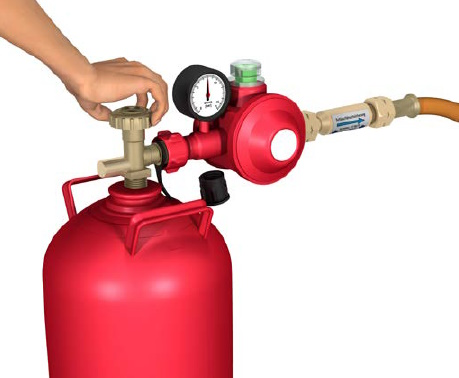
Abb. 10 Einflaschenanlage mit direkt angeschraubter Druckregeleinrichtung (keine Zone nach Kontrolle der Dichtheit)
Dies ist unter folgenden Bedingungen der Fall:
Wenn dies zutrifft, ist keine Zone vorhanden. Jedoch sind Zündquellen, wie z. B. offene Flammen, im Nahbereich des Flaschenventils bzw. der Druckregeleinrichtung während des Flaschenwechsels zu vermeiden. Auf ein Rauchverbot ist hinzuweisen.
Eine Festlegung des Gefahrenbereiches (siehe Abbildung 11) ist dennoch durchzuführen.
Gefahrenbereich
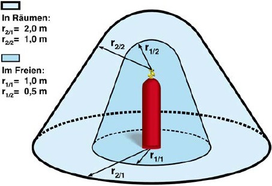
Abb. 11 Geometrische Abmessungen der Gefahrenbereiche einer Einflaschenanlage (Verzicht auf Darstellung von Druckregeleinrichtung, Rohrleitung und Verbrauchseinrichtung)
Mehrflaschenanlage
Im Aufstellungsbereich von Mehrflaschenanlagen ist beim Flaschenwechsel mit dem Auftreten einer gefährlichen explosionsfähigen Atmosphäre zu rechnen.
Mehrflaschenanlagen im Freien
a. Aufstellung im Freien:
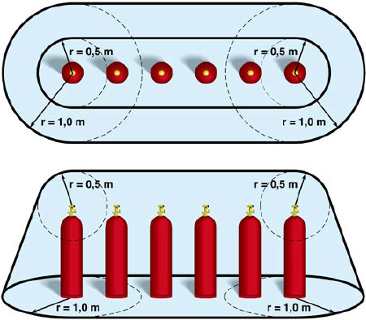
Abb. 12 Geometrische Abmessung von Gefahrenbereich und Zone einer Mehrflaschenanlage im Freien (Verzicht auf Darstellung von Druckregeleinrichtung, Rohrleitung und Verbrauchseinrichtung)
Bei den Mehrflaschenanlagen ist aufgrund der eingeschlossenen Gasmenge in der Rohrleitung infolge der betriebsbedingten Freisetzung von Flüssiggas, z. B. beim Flaschenwechsel, grundsätzlich von einer Zone auszugehen. Bei Erfüllung der Anforderungen entsprechend DGUV Regel 113-001 "Explosionsschutz-Regeln (EX-RL)" liegt Zone 2 vor mit folgenden geometrischen Abmessungen bei Mehrflaschenanlagen im Freien:
Zone 2:
0,5 m um jede Anschlussstelle und kegelförmig bis zum Boden, am Boden r = 1 m
Gefahrenbereich:
0,5 m um jede Anschlussstelle und kegelförmig bis zum Boden, am Boden r = 1 m
b. Aufstellung im Flaschenschrank
Bei Erfüllung der Anforderungen entsprechend DGUV Regel 113-001 "Explosionsschutz-Regeln (EX-RL)" wird folgende Zoneneinteilung bei Mehrflaschenanlagen im Flaschenschrank vorgenommen:
Zone 1:
im Innern des Flaschenschranks
Zone 2:
in der Umgebung r = 0,5 m um den Flaschenschrank bis Oberkante Flaschenschrank
Gefahrenbereich:
Im Innern des Flaschenschranks und in der Umgebung mit r = 0,5 m um den Flaschenschrank bis Oberkante Flaschenschrank
Hinweis: Entsprechend DGUV Regel 113-001 "Explosionsschutz-Regeln (EX-RL)" müssen Flaschenschränke je eine Lüftungsöffnung im Boden- und Deckenbereich mit einer Größe von 1 % der Grundfläche, mindestens jedoch von je 100 cm² besitzen und aus nichtbrennbaren Werkstoffen bestehen.
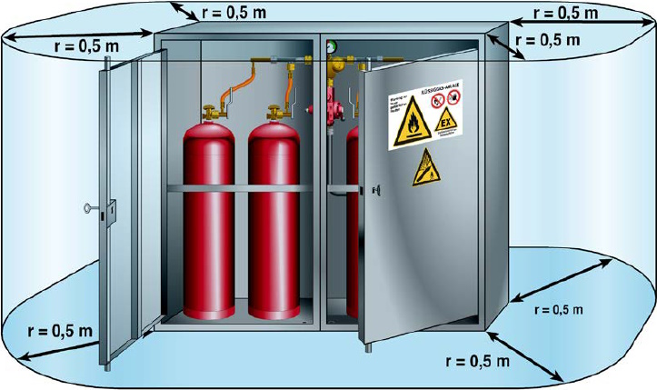
Abb. 13 Geometrische Abmessungen von Gefahrenbereich und Zonen einer Mehrflaschenanlage im Flaschenschrank
Mehrflaschenanlage im Aufstellungsraum
Bei Erfüllung der Anforderungen entsprechend DGUV Regel 113-001 "Explosionsschutz-Regeln (EX-RL)" wird folgende Zoneneinteilung bei Mehrflaschenanlagen im Aufstellungsraum vorgenommen:
Zone 1:
0,5 m um jede Anschlussstelle und kegelförmig bis zum Boden, am Boden r = 1 m
Zone 2:
übriger Raum sowie außen 0,5 m um die Lüftungsöffnungen
Gefahrenbereich:
Gesamter Raum sowie außen 0,5 m um die Lüftungsöffnungen
Die Abbildung 14 zeigt eine Mehrflaschenanlage im Aufstellungsraum mit nicht direkt angeschlossener Druckregeleinrichtung an der Flüssiggasflasche. Ungeregelter Druck steht von den zum Entleeren angeschlossenen Flüssiggasflaschen, den Absperrarmaturen über die Hochdruckschlauchleitungen und die jeweilige Seite des Sammelrohres bis zur Druckregeleinrichtung an.
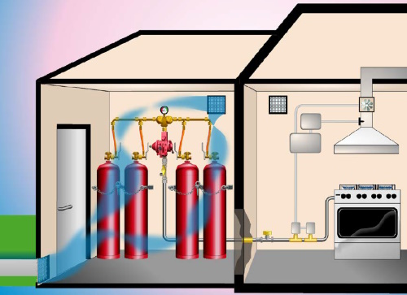
Abb. 14 Mehrflaschenanlage im Aufstellungsraum
In Aufstellungsräumen mit Flüssiggasflaschen
Bauliche Ausführung der Aufstellungsräume
Die Aufstellungsräume besitzen mindestens zwei ins Freie führende gegenüberliegende Lüftungsöffnungen im Boden- und Deckenbereich von mindestens jeweils 100 cm², siehe Abbildung 14. Die Innenwände der Aufstellungsräume zu anderen Räumen sind öffnungslos und gasdicht auszuführen.
Aufstellungsräume mit Flüssiggasflaschen müssen
Die Abtrennung von Räumen, die dem Aufenthalt von Menschen dienen (neben, unter oder über dem Aufstellungsraum), z. B. Sozialräume, muss entsprechend Feuerwiderstandsklasse F 90 ausgeführt sein.
Ortsfeste Flüssiggasanlage
Bei Erfüllung der Anforderungen entsprechend DGUV Regel 113-001 "Explosionsschutz-Regeln (EX-RL)" wird folgende Zoneneinteilung bei einem oberirdisch aufgestellten ortsfesten Druckgasbehälter vorgenommen.
Zone 1:
In einem Radius r = 1 m um das Füllventil bei häufiger Befüllung (> 12 mal im Jahr)
Zone 2:
1 m um das Füllventil und kegelförmig bis zum Boden, am Boden r = 3 m
Für Gasfüllanlagen ("Flüssiggastankstellen") gelten gemäß TRBS 3151/TRGS 751 abweichende Regelungen (Zone 1).
Durch geeignete Maßnahmen muss sichergestellt sein, dass die Anforderungen gemäß DGUV Regel 113-001 "Explosionsschutz-Regeln (EX-RL)" für die Zone 2 während der Dauer des Befüllvorganges eingehalten sind.
Eine geeignete Maßnahme kann die Kontrolle des Zonenbereiches auf Abwesenheit wirksamer Zündquellen sein. Wird die gefährliche explosive Atmosphäre (g. e. A.) nur während des Befüllvorganges erzeugt und können Freisetzungen zu anderen Zeiten, etwa durch Dichtheitsprüfungen, ausgeschlossen werden, so können potenziell wirksame Zündquellen in der ausgewiesenen Zone nach Einzelprüfung (Gefährdungsbeurteilung) zulässig sein, z. B. der Betrieb eines Rasenmähers. Bei wiederkehrenden gleichartigen Tätigkeiten mit Auftreten potenziell wirksamer Zündquellen innerhalb des Zonenbereiches, z. B. Rasen mähen, ist die Gefährdungsbeurteilung in der Regel nur vor der erstmaligen Ausführung der Tätigkeit erforderlich.
Erstreckt sich die Zone 2 auf Nachbargrundstücke, so ist während des Befüllvorganges der explosionsgefährdete Bereich entweder durch
zu begrenzen oder es sind entsprechende vertragliche Nutzungsvereinbarungen mit den Nachbarn zu treffen.
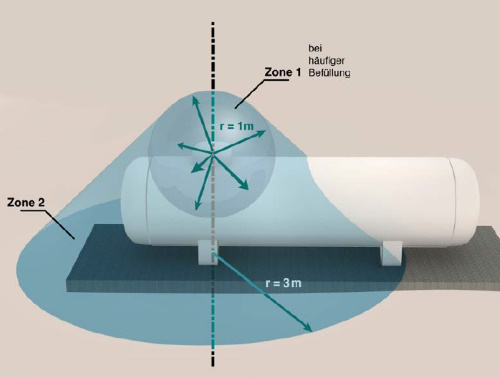
Abb. 15 Geometrische Abmessungen der Zone eines ortsfesten Druckgasbehälters im Freien (Verzicht auf Darstellung von Druckregeleinrichtung, Rohrleitung und Verbrauchseinrichtung)
Erstreckt sich die Zone 2 auf öffentliche Verkehrsflächen, so ist während des Befüllvorganges der explosionsgefährdete Bereich entweder durch
zu begrenzen.
Gefahrenbereich
In einem Radius von 5 m um betriebsbedingte Freisetzungsstellen wie z. B. Füllventile dürfen sich entsprechend den Regelungen der TRBS 3146/TRGS 746 "Ortsfeste Druckanlagen für Gase" keine
befinden.
5.1.2 Explosionsschutzdokument
Sobald das Auftreten von gefährlicher explosionsfähiger Atmosphäre nicht sicher verhindert werden kann, ist ein Explosionsschutzdokument nach § 6 (9) der Gefahrstoffverordnung (GefStoffV) zu erstellen. Das Explosionsschutzdokument enthält das Ergebnis der Beurteilung der Gefährdungen durch explosionsfähige Gemische und, falls erforderlich, die Zoneneinteilung sowie die festgelegten Schutzmaßnahmen zur Vermeidung von Explosionen, u. a. zur Vermeidung von Zündquellen, sowie die Festlegungen zu den erforderlichen Prüfungen.
| Weitere Informationen | |
|
Muster-Explosionsschutzdokumente siehe BGN Branchenwissen, Wissen Kompakt Flüssiggas www.bgn.de/754 |
|
Zu den organisatorischen Schutzmaßnahmen zum Explosionsschutz gehört auch die Festlegung von Maßnahmen für den Fall, dass Heißarbeiten, z. B. Schweißen, Schleifen etc., in explosionsgefährdeten Bereichen durchgeführt werden müssen: Vor der Durchführung von Feuer- und Heißarbeiten in explosionsgefährdeten Bereichen ist auf Grundlage der TRBS 1112 Teil 1 eine Gefährdungsbeurteilung für die Instandhaltungsarbeiten durchzuführen. Für die Arbeiten ist ein dokumentiertes Freigabeverfahren vorzusehen, erforderlichenfalls durch Freimessen des betroffenen Bereiches, siehe DGUV Veröffentlichung FBFHB-008 "Erlaubnisschein für Schweiß-, Schneid-, Löt-, Auftau- und Trennschleifarbeiten" www.dguv.de > Webcode: p021360.
Es ist zweckmäßig, den Erlaubnisschein inklusive möglicher Anlagen als Nachweis einer systematischen Dokumentation mindestens 10 Jahre aufzubewahren, siehe hierzu BGN Branchenwissen, Wissen Kompakt Flüssiggas www.bgn.de/754.
5.1.3 Aufstellung von Flüssiggasanlagen
Flüssiggasanlagen bestehen aus der Versorgungs- und Verbrauchsanlage (siehe Abbildungen unter 3 Begriffsbestimmungen).
Neben der Beachtung der Regelungen zur Aufstellung (siehe 5.1.3.1 Aufstellung von Flüssiggasflaschenanlagen und 5.1.3.2 Aufstellung von ortsfesten Flüssiggasanlagen) ist am Aufstellungsort der Flüssiggasanlage eine Sicherheits- und Gesundheitsschutzkennzeichnung vorzunehmen. Diese wird z. B. auf dem ortsfesten Druckgasbehälter oder an der Tür des Aufstellungsraumes dauerhaft angebracht (siehe Abbildung 16).
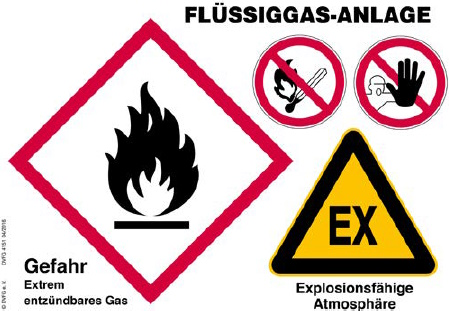
Abb. 16 Sicherheitskennzeichen Flüssiggasanlagen bei Versorgung aus ortsfesten Druckgasbehältern (Quelle: DVFG)
5.1.3.1 Aufstellung von Flüssiggasflaschenanlagen
Aufstellungsräume und Aufstellplätze im Freien für Flüssiggasflaschen, z. B. Flaschenschränke, müssen entsprechend TRBS 3145/TRGS 745 mit den Warnzeichen W029 "Warnung vor Gasflaschen", D-W021 "Warnung vor explosionsfähiger Atmosphäre" und W021 "Warnung vor feuergefährlichen Stoffen" sowie den Verbotszeichen D-P006 "Zutritt für Unbefugte verboten" und P003 "Keine offene Flamme; Feuer, offene Zündquelle und Rauchen verboten" entsprechend ASR A1.3 versehen sein (siehe auch 5.1.19 Lagerung von Flüssiggasflaschen).
Die Auswertung des Unfallgeschehens hat gezeigt, dass ein Hauptanteil der Unfälle auf Undichtheiten an den zuvor gelösten Verbindungsstellen nach dem Flaschenwechsel zurückzuführen ist. Deshalb ist die Kontrolle der Dichtheit nach dem Flaschenwechsel unerlässlich (siehe 5.1.11 Kontrolle der Dichtheit/Feststellung von Undichtheiten). Sollte es zu einer Undichtheit kommen, so ist es entscheidend, ob und in welchem Umfang sich eine gefährliche explosionsfähige Atmosphäre bilden kann. Ausschlaggebend hierfür sind u. a. die Belüftungsverhältnisse am Aufstellungsort. Diese sind im Freien naturgemäß besser als in Räumen. Aus diesem Grund muss zur Minimierung des Restrisikos, unter Berücksichtigung der Anforderungen im Abschnitt 5.1.1.2 Zoneneinteilung im Freien und in Räumen, die "Aufstellungspriorität" in der folgenden Reihenfolge beachtet werden.
|
Priorität 1: Die Flüssiggasflaschen müssen im Freien aufgestellt werden. 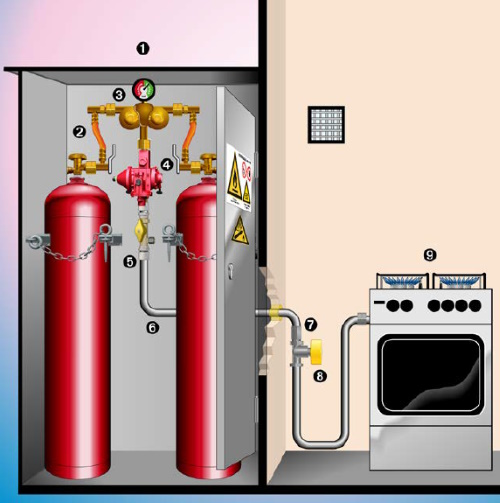 Abb. 17 Flaschenaufstellung im Freien (z. B. im Flaschenschrank) 1 verschließbarer Flaschenschrank Ist die Aufstellung im Freien nicht möglich, muss dies in der Gefährdungsbeurteilung begründet und dokumentiert werden. In diesem Fall ist zu prüfen, ob für die Aufstellung von Flüssiggasflaschen ein separater Aufstellungsraum zur Verfügung gestellt werden kann. |
|
Priorität 2: Aufstellung im separaten Aufstellungsraum Kriterien für den separaten Aufstellungsraum sind:
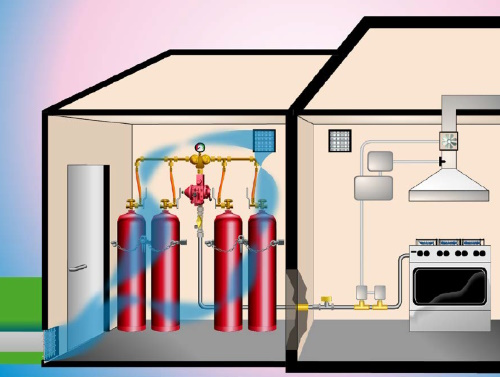 Abb. 18 Mehrflaschenanlage im separaten Aufstellungsraum Ergibt die Gefährdungsbeurteilung, dass die Aufstellung in Form der beiden vorgenannten Prioritäten (Aufstellung im Freien bzw. in einem Aufstellungsraum) nicht möglich ist, ist dies in der Gefährdungsbeurteilung zu begründen und zu dokumentieren. Nur in diesem Fall dürfen in einem Arbeitsraum Flüssiggasflaschen aufgestellt werden. |
|
Priorität 3: Aufstellung im Arbeitsraum In einem Arbeitsraum (z. B. Küchen) bis 500 m³ sowie für jeden weiteren 500 m³ Rauminhalt dürfen maximal
aufgestellt werden. 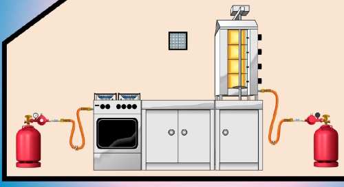 Abb. 19 Flaschenaufstellung im Arbeitsraum Nur in folgenden zu begründenden Ausnahmefällen dürfen bis zu acht Flüssiggasflaschen (Summe der angeschlossenen und bereitgehaltenen Flüssiggasflaschen) mit jeweils maximal 16 kg zulässigem Füllgewicht aufgestellt werden:
|
Bei der Aufstellung von Flüssiggasflaschenanlagen müssen weitere Anforderungen beachtet werden:
1. Verbrauchsanlagen dürfen nur an höchstens 8 Flüssiggasflaschen zur gleichzeitigen Entleerung angeschlossen werden.
2. Flüssiggasanlagen müssen so errichtet und aufgestellt werden, dass sie sicher betrieben und instandgehalten werden können.
3. Flüssiggasanlagen müssen so aufgestellt werden, dass sie gegen mechanische Beschädigung geschützt sind.
4. Flüssiggasflaschen müssen so aufgestellt werden, dass sie gegen unzulässige Erwärmung geschützt sind.
Eine unzulässige Erwärmung ist bei Flüssiggasflaschen nicht anzunehmen, wenn das Flüssiggas in der Flasche nicht höher als 40 °C erwärmt wird.
In der Regel sind zu Wärmequellen folgende Mindestabstände für Flüssiggasflaschen ausreichend (siehe Tabelle 3).
Tabelle 3 Wärmequellen/Mindestabstände
| Wärmequellen | Mindestabstände | |
| ohne Strah- lungs- schutz |
mit wirk- samem Strah- lungs- schutza) |
|
| von Heizgeräten, Feuerstätten und ähnlichen Wärmequellen | 0,70 m | 0,30 m |
| von Heizkörpernb) | 0,50 m | 0,10 m |
| von Gasherden und ähnlichen Wärmequellen | 0,30 m | 0,10 m |
a) aus nichtbrennbarem Material z. B. ein Strahlungsschutzblech
b) bei Vorlauftemperaturen von unter 60 °C ist ein Abstand von 10 cm ohne Strahlungsschutz ausreichend (Quelle: TRF 2021)
Von den geringeren Abständen (Spalte 3 der Tabelle 3) kann nur dann ausgegangen werden, wenn durch den Strahlungsschutz nachweislich keine unzulässige Erwärmung (höher als 40 °C) eintritt, z. B. durch
Flüssiggasflaschen dürfen in oder unter Verbrauchseinrichtungen nur aufgestellt werden, wenn
5. Flüssiggasanlagen müssen so aufgestellt werden, dass sie nicht öffentlich zugänglich sind oder die Sicherheitseinrichtungen, Regeleinrichtungen und Stellteile an der Versorgungsanlage gegen unbefugten Zugriff Dritter gesichert sind.
Dies ist z. B. erfüllt durchStändige Beaufsichtigung bedeutet, dass sich an jeder durch Dritte zugänglichen Anlage mindestens ein Mitarbeiter oder eine Mitarbeiterin immer in der Nähe aufhalten, die beauftragt und unterwiesen sind
oder
durch die Arbeitsweise eine ständige Beobachtung gewährleistet ist, z. B. bei Arbeiten mit Handbrennern.
6. Flüssiggasanlagen dürfen nicht in Räumen unter Erdgleiche aufgestellt werden. Dies gilt nicht
7. In Treppenräumen, engen Höfen sowie Durchgängen und Durchfahrten oder in deren unmittelbarer Nähe dürfen Flüssiggasflaschen nur aufgestellt werden, wenn dies zur Ausführung von Arbeiten dort vorübergehend notwendig ist und besondere Sicherheitsmaßnahmen durch die Unternehmerin oder den Unternehmer getroffen sind.
Vorübergehendes Aufstellen ist z. B. bei Instandhaltungsarbeiten erforderlich.
Besondere Sicherheitsmaßnahmen sind z. B.
8. Verbrauchseinrichtungen müssen standsicher aufgestellt werden. Dies gilt nicht für solche Verbrauchseinrichtungen, die während des Betriebes von Hand geführt werden.
9. Bei Verbrauchsanlagen mit angeschlossenen Flüssiggasflaschen ab 1 Liter Inhalt, denen Gas aus der Gasphase entnommen wird, müssen die Flüssiggasflaschen aufrechtstehend und standsicher aufgestellt werden.
Dies bedeutet in der Praxis:
Aus den genannten Gründen müssen daher insbesondere die 33-kg-Flüssiggasflaschen aufgrund ihrer hohen Kippgefährdung gegen Umfallen gesichert werden.
So genannte Handwerkerflaschen sind 1-Liter-Flaschen. Da die Entnahme aus der Gasphase erfolgt, dürfen diese nur aufrechtstehend oder hängend betrieben werden.
10. In Nischen von weniger als 2 m² Bodenfläche ist die Aufstellung von Flüssiggasflaschen weder in Flaschenschränken noch im Freien zulässig, sofern infolge Undichtheiten ausströmendes Gas nicht gefahrlos abfließen kann.
11. Durch ausreichende Abstände oder andere geeignete Schutzmaßnahmen ist sicherzustellen, dass durch Verbrauchsanlagen keine unzulässigen Temperaturen an Bauteilen aus brennbaren Stoffen entstehen.
Dies ist z. B. sichergestellt, wenn an den Oberflächen von Bauteilen mit brennbaren Stoffen bei Nennwärmebelastung keine höheren Temperaturen als 85 °C auftreten können.
Bei abgasführenden Teilen ist diese Forderung erfahrungsgemäß erfüllt, wenn z. B. ein Abstand von 0,1 m zu Bauteilen aus brennbaren Stoffen eingehalten ist.
Bei Durchbrüchen durch Bauteile ist diese Forderung z. B. erfüllt, wenn der Abstand durch Schutzrohre mit Abstandshaltern eingehalten und der Zwischenraum mit nichtbrennbaren, formbeständigen Baustoffen geringer Wärmeleitfähigkeit ausgefüllt ist.
Andere Schutzmaßnahmen sind z. B. Wärmedämmung oder Belüftung gegen Wärmestrahlung.
Zu den Bauteilen aus brennbaren Baustoffen zählen z. B. auch Einbaumöbel.
Unzulässige Temperaturen können entstehen durch
12. In Räumen und Bereichen, in denen mit explosionsfähiger Atmosphäre gerechnet werden muss, dürfen Verbrauchseinrichtungen nur unter Beachtung der Explosionsschutzmaßnahmen in Betrieb genommen werden, siehe 5.1.1 Gefahrenbereiche und Zonen.
13. Außerdem ist sicherzustellen, dass Verbrauchsanlagen, bei denen ein Austritt unverbrannten Gases und die Bildung einer gefährlichen explosionsfähigen Atmosphäre nicht sicher verhindert ist, so aufgestellt werden, dass die Gefahrenbereiche und Zonen um
eingehalten werden.
Der Gefahrenbereich darf nur durch bauliche oder gleichwertige Maßnahmen begrenzt sein, wenn die Lüftung nicht unzulässig behindert wird, siehe 5.1.1 Gefahrenbereiche und Zonen.
14. Die gewerbliche Verwendung von Flüssiggasflaschen mit innenliegendem Ventil nach DIN EN ISO 14245 ist verboten. Bei den im Gewerbe bekannten Flüssiggasflaschen sind Flaschenventile inkl. Sicherheitsventile bereits im Auslieferungszustand dicht eingebaut, dies ist bei den Flüssiggasflaschen mit innenliegendem Ventil nicht der Fall.
5.1.3.2 Aufstellung von ortsfesten Flüssiggasanlagen
Vor der Aufstellung und Inbetriebnahme einer ortsfesten Flüssiggasanlage hat die Unternehmerin oder der Unternehmer im Rahmen der Gefährdungsbeurteilung die Flüssiggasanlage zu beurteilen und die notwendigen Maßnahmen festzulegen.
Bei der Auswahl des Aufstellungsortes sind insbesondere folgende Punkte zu beachten:
Die Unternehmerin oder der Unternehmer hat bereits bei der Planung der Flüssiggasanlage im Rahmen der Gefährdungsbeurteilung den geeigneten Aufstellungsort zu ermitteln und festzulegen.
5.1.4 Anschluss von Verbrauchsanlagen
Bei der Planung einer Flüssiggasanlage muss die Dimensionierung der Versorgungsanlage auf die Verbrauchsanlage abgestimmt werden. Hierfür ist eine fachkundige Beratung notwendig. Dies ist wichtig, um einen störungsfreien Betrieb ohne Vereisung der Flüssiggasflasche und des Flaschenventils zu gewährleisten. Die Vereisung stellt sich immer dann ein, wenn zu hohe Gasmengen aus der Gasphase entnommen werden.
| Eine vereiste Flüssiggasflasche ist nicht leer! Es kann weiter zum Austritt von Flüssiggas kommen. Auch deshalb muss vor jedem Flaschenwechsel zur Sicherheit das Flaschenventil zugedreht werden! |
Mit der optimalen Auswahl der Flaschengröße sowie der Anzahl der parallel installierten Flüssiggasflaschen kann unter Berücksichtigung der Entnahmeart ein störungsfreier Betrieb erreicht werden, siehe Tabelle 4.
|
Rechenbeispiel für eine Verbrauchseinrichtung mit 24 kW Nennwärmebelastung Der Heizwert von 1 kg Propan entspricht 12,87 kWh. Berechnung: 24 kW : 12,87 kWh/kg = 1,86 kg/h Für den Betrieb eines Gasgerätes mit einer Nennwärmebelastung von 24 kW ist eine Entnahmeleistung von ca. 1,86 kg/h erforderlich. Entsprechend der Entnahmeart (kurzzeitig, periodisch, Dauerentnahme) wird z. B. für Dauerentnahme durch die parallele Installation von min. 3 x 33 kg Flüssiggasflaschen die erforderliche Gasmenge von 1,8 kg/h (3 x 0,6 kg/h) zur Verfügung gestellt. |
Aus den vorgenannten Gründen muss dafür gesorgt werden, dass Verbrauchsanlagen an Versorgungsanlagen nur angeschlossen werden, wenn unter Berücksichtigung der Gesamtnennwärmebelastung aller Verbrauchseinrichtungen und der Entnahmeart keine den Betriebsablauf störende Unterkühlung der Versorgungsanlage eintritt.
| Vereisungen, die infolge zu hoher Gasentnahme entstanden sind, dürfen nur durch langsames Auftauen beseitigt werden. Offenes Feuer, glühende Gegenstände und Strahler dürfen zum Auftauen nicht verwendet werden. Vereisungen dürfen nicht abgeschlagen werden. |
Das Auftauen von Vereisungen oder die Erwärmung von Flüssiggasflaschen erfolgt zweckmäßigerweise mit Warmluft oder Warmwasser mit einer überwachten Temperatur von maximal 40 °C.
Treten Vereisungen an der Flüssiggasanlage auf, so muss sich der Unternehmer oder die Unternehmerin hinsichtlich der Dimensionierung der Versorgungsanlage fachkundig beraten lassen.
Tabelle 4 Entnahmeart – maximale Entnahmeleistung bei Flaschengröße in kg/h bei Raumtemperatur
| Entnahmeart | Entnahmeleistung bei entsprechender Flaschengröße in kg/h | ||
| 5 kg | 11 kg | 33 kg | |
| Kurzzeitige bzw. bei stoßweiser Entnahme (ca. 20 Min.) | 1,5 kg/h | 2,0 kg/h | 3,0 kg/h |
| Periodische Entnahme bzw. bei 50 % Unterbrechungen | 0,5 kg/h | 0,8 kg/h | 1,8 kg/h |
| Dauerentnahme | 0,2 kg/h | 0,3 kg/h | 0,6 kg/h |
Quelle: TRF 2012 Kommentar: 2014
Gelangt Flüssiggas in der Flüssigphase in die Druckregeleinrichtung, so durchfließt es diese und expandiert erst in der Rohrleitung vor den Gasgeräten. Dadurch kommt es zu einem unzulässig hohen Druck im Rohrleitungssystem. Aus diesem Grund muss beim Anschluss der Verbrauchsanlage an die Versorgungsanlage sichergestellt werden, dass Flüssiggas nicht unbeabsichtigt in flüssiger Phase in die Rohrleitung gelangt.
Dies wird sichergestellt, indem Flüssiggas nur aus
entnommen wird und Treibgasflaschen nur für Treibgaszwecke verwendet werden.
Für den Betrieb aus der Flüssigphase sind z. B. Zerstäubungsbrenner geeignet, siehe 5.2.6 Verbrauchsanlagen mit Zerstäubungsbrennern.
5.1.5 Montage/Anschluss der Druckregeleinrichtungen oder der Hochdruckschlauchleitungen an Flüssiggasflaschen
Kontrolle der Dichtheit
Nach der Herstellung der Anschlussverbindung (Druckregeleinrichtung an Flaschenventil bzw. Hochdruckschlauch an Flaschenventil) muss diese bei geöffnetem Flüssiggasflaschen-Absperrventil und geschlossenem Mehrfachstellgerät auf Dichtheit kontrolliert werden, z. B. mit schaumbildenden Mitteln. Die Dichtheitskontrolle ist vor Inbetriebnahme der Flüssiggasanlage durchzuführen (siehe 5.1.11 Kontrolle der Dichtheit/Feststellung von Undichtheiten).
Aufgrund der unterschiedlichen Dichtsysteme bei gleicher Gewindegröße der Flaschenventil-Ausgangsanschlüsse ist zu unterscheiden zwischen
|
| Druckregeleinrichtungen an Flüssiggasflaschen dürfen nur angeschlossen werden, wenn die Anschlüsse aufeinander abgestimmt sind. |
| Die Anschlüsse der Druckregeleinrichtungen und der Hochdruckschlauchleitungen an Flüssiggasflaschen besitzen ein Linksgewinde. |
| Weitere Informationen | |
| Muster-Betriebsanweisung "Wechsel von Flüssiggasflaschen" siehe BGN Branchenwissen, Wissen Kompakt Flüssiggas www.bgn.de/754 | |
Flüssiggas-Kleinflaschen
Kleinflaschen (3 kg ≤ Füllgewicht ≤ 16 kg) haben ein Flaschenventil, bei dem sich ausgangsseitig ein Gummidichtring im Entnahmestutzen befindet, der zur Ausrüstung des Ventils gehört (siehe Abbildung 21). Die Abdichtung gegen den Gummidichtring erfolgt durch einen metallischen Vorsprung an der Druckregeleinrichtung (S2SR), indem die Überwurfmutter der Druckregeleinrichtung oder des Hochdruckschlauches mit Handkraft an das Flaschenventil angeschraubt wird.
| Bei einem Fehlen des Gummidichtringes im Flaschenventil kann keine dichte Verbindung zwischen Druckregeleinrichtung und Flaschenventil hergestellt werden. Das Vorhandensein und der Zustand des Gummidichtringes müssen vor dem Anschließen kontrolliert werden. |
| Zur Herstellung einer dichten Verbindung zwischen Kleinflasche und Druckregeleinrichtung darf keine Zange benutzt werden, weil das dadurch aufgebrachte Drehmoment zur Zerstörung des Dichtringes und der Geometrie der Überwurfmutter führt. Im Fachhandel sind "Montagehilfen" zu erwerben, mit denen das notwendige begrenzte Drehmoment aufgebracht werden kann. |
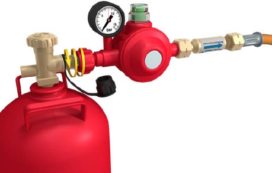
Abb. 20 Kleinflaschenanschluss/Druckregeleinrichtung festschrauben (Drehrichtung links)
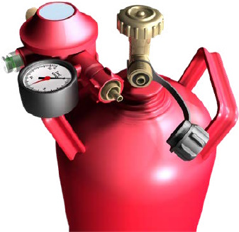
Abb. 21 Absperrventil der Kleinflasche mit Gummidichtring im Entnahmestutzen und zugehöriger Druckregeleinrichtung
Flüssiggas-Großflaschen
Großflaschen (> 16 kg Füllgewicht, z. B. 33 kg-Flüssiggasflaschen) haben ein Absperrventil mit einer metallischen Flachdichtfläche am Ausgangsanschluss – also keinen Dichtring. Zur Abdichtung des Anschlusses am Absperrventil befindet sich eine Flachdichtung aus Aluminium oder Kunststoff in der Druckregeleinrichtung (OPSO) oder im Hochdruck-Schlauch (siehe Abbildung 22). Diese muss in einem einwandfreien Zustand und selbsthaltend in der Anschlussarmatur eingesetzt sein.
| Vor dem Aufschrauben der Sechskantmutter auf das Absperrventil muss immer kontrolliert werden, ob die Flachdichtung vorhanden und unbeschädigt ist. |
| Das notwendige Drehmoment für einen dichten Anschluss wird durch den Einsatz eines nicht funkenschlagenden Gabelschlüssels der Schlüsselweite 30 erzeugt. Auch bei der Montage des Großflaschenanschlusses ist der Einsatz von Zangen verboten. Diese zerstören dauerhaft die Geometrie der Sechskantmutter, führen zu vorzeitigen Instandhaltungsmaßnahmen und somit zu unnötigen Kosten für den Betrieb. |
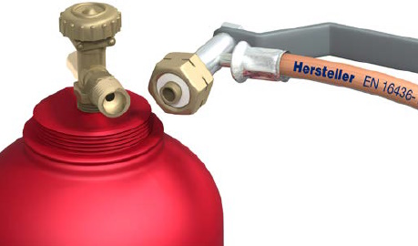
Abb. 22 Absperrventil der Großflasche und Hochdruckschlauchanschluss (PS 30 bar) mit Flachdichtung in der Sechskantmutter
5.1.6 Druckregeleinrichtungen und Sicherheitseinrichtungen
Die Druckregeleinrichtung und die zugehörigen Sicherheitseinrichtungen haben die Aufgabe, den ungeregelten Druck der Versorgungsanlage auf den erforderlichen Betriebsdruck der Verbrauchsanlage zu regeln. So muss z. B. der Nennausgangsdruck der Druckregeleinrichtung mit dem Nennbetriebsdruck des Gasverbrauchsgerätes übereinstimmen.
Beim Betrieb von Flüssiggasanlagen im Druckbereich größer 100 mbar sind spezielle Anforderungen an die Druckregeleinrichtungen zu beachten, siehe 5.1.6.2 Druckregeleinrichtungen in Mitteldruckanlagen mit Flüssiggasflaschen.
Die DIN 4811 "Flüssiggas-Druckregelgeräte und Sicherheitseinrichtungen – Anforderungen" legt als Auswahlnorm für die Verwendung der Druckregeleinrichtungen in Deutschland die Anforderungen und Betriebsbedingungen an Flüssiggasdruckregeleinrichtungen und deren Sicherheitseinrichtungen fest. Basis hierfür ist die DIN EN 16129 "Druckregelgeräte, automatische Umschaltanlagen mit einem höchsten Ausgangsdruck bis einschließlich 4 bar und einem maximalen Durchfluss von 150 kg/h sowie die dazugehörigen Sicherheitseinrichtungen und Übergangsstücke für Butan, Propan und deren Gemische".
Umschalteinrichtungen
Zur Erhöhung der Entnahmeleistung kann die Anzahl der Flüssiggasflaschen, aus denen parallel entnommen wird, erhöht werden (siehe 5.1.4 Anschluss von Verbrauchsanlagen). Um einen unterbrechungsfreien Betrieb der Verbrauchsanlage zu ermöglichen, können automatische oder manuelle Umschalteinrichtungen verwendet werden. Automatische Umschalteinrichtungen sind Druckregeleinrichtungen, die als Kombination mit einem integrierten Niederdruckregler ausgerüstet sind oder mit einem Niederdruckregler ergänzt werden müssen. Automatische Umschalteinrichtungen schalten automatisch von der leeren Betriebs- auf die volle Reserveseite um. Abbildung 17 zeigt beispielhaft eine Zweiflaschenanlage mit einer automatischen Umschalteinrichtung.
Alternativ können auch manuelle Umschalteinrichtungen eingesetzt werden, bei denen wahlweise aus der Betriebs- oder Reserveseite entnommen wird.
| Bei Niederdruckanlagen darf als Umschalteinrichtung keine Absperrarmatur mit Handrad installiert sein, weil eine dichte Sperrstellung optisch nicht erkennbar ist. |
5.1.6.1 Druckregeleinrichtungen in Niederdruckanlagen mit Flüssiggasflaschen
Entnahmemengen ≤ 1,5 kg/h
Bei der Versorgung aus einer Kleinflasche (bis 16 kg) muss die Absicherung der Verbrauchseinrichtung grundsätzlich durch eine zweistufige Sicherheitsdruckregeleinrichtung "S2SR" (bisherige Bezeichnung: Überdrucksicherheitseinrichtung (ÜDS)) mit einer maximalen Entnahmemenge von 1,5 kg/h erfolgen.
| Bei Druckregeleinrichtungen mit Anzeigevorrichtung, z. B. einer Rot-/Grün-Sichtanzeige, erkennt der Betreiber, dass die defekte Druckregeleinrichtung (Sichtanzeige rot) ausgetauscht werden muss, siehe Abbildung 23. Nach Austausch und vor Wiederinbetriebnahme muss eine Prüfung durch eine zur Prüfung befähigte Person für Flüssiggasanlagen durchgeführt werden. |
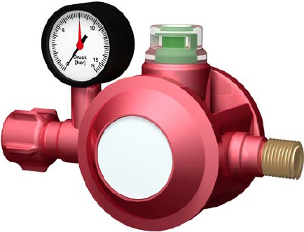
Abb. 23 Druckregeleinrichtung S2SR mit TAE, Manometer und Sichtanzeige; Sichtanzeige:
grün bei 50 mbar Betriebsdruck
rot bei Ausgangsdruck über 80 mbar
Steht die Flüssiggasflasche in einem Gebäude, wird zusätzlich eine thermisch auslösende Absperreinrichtung (TAE) benötigt (Kennzeichnung der Druckregeleinrichtung mit "T" oder "F1-t"), die integriert am Eingang der Druckregeleinrichtung angebracht ist.
Aus einer Flüssiggasflasche ≤ 16 kg Füllgewicht ist nur kurzzeitig eine Entnahme von 1,5 kg/h möglich.
|
Die zweistufige Sicherheitsdruckregeleinrichtung verfügt eingangsseitig über eine Überwurfmutter für den Anschluss an Flüssiggasflaschen ≤ 16 kg Füllgewicht, den sogenannten Kleinflaschenanschluss.
Zu beachten ist, dass die zweistufige Sicherheitsdruckregeleinrichtung "S2SR" mit Überwurfmutter nur für den Anschluss an eine Kleinflasche vorgesehen ist und nicht für den Anschluss an eine Großflasche (Füllgewicht > 16 kg) verwendet werden darf, da aufgrund unterschiedlicher Dichtsysteme keine Dichtheit zu erzielen ist. Nur eine zweistufige Sicherheitsdruckregeleinrichtung "S2SR" mit "Kombinationsanschluss", der eingangsseitig über eine Sechskantmutter verfügt, darf aufgrund ihrer Bauart sowohl an Flüssiggasflaschen mit Kleinflaschenventil als auch an Flüssiggasflaschen > 16 kg ≤ 33 kg Füllgewicht angeschlossen werden. |
| Weitere Informationen | |
| Muster-Betriebsanweisung "Wechsel von Flüssiggasflaschen" siehe BGN Branchenwissen, Wissen Kompakt Flüssiggas www.bgn.de/754 | |
Entnahmemengen > 1,5 kg/h
Bei größeren Entnahmemengen als 1,5 kg/h sind Druckregeleinrichtungen mit zusätzlicher Überdruck-Sicherheitsabsperreinrichtung (englisch: Over-Pressure Shut Off (OPSO); bisherige Bezeichnung: Sicherheitsabsperrventil (SAV)) sowie einem Überdruck-Abblaseventil mit begrenztem Durchfluss (PRV) erforderlich. Die Sicherheitsabsperreinrichtung (OPSO) ist eine Einrichtung, die im normalen Betrieb geöffnet (betriebsbereit) ist und die Aufgabe hat, den Gasstrom selbsttätig abzusperren, sobald der Druck in dem abzusichernden System einen oberen Ansprechdruck erreicht. Sie öffnet sich nach dem Sperren nicht selbsttätig.
Zusätzlich zu der Überdruck-Sicherheitsabsperreinrichtung (OPSO) kann diese Druckregeleinrichtung herstellerseitig auch mit einer Unterdruck-Sicherheitsabsperreinrichtung (UPSO) ausgestattet werden. Diese kombinierte Überdruck-Unterdruck-Sicherheitsabsperreinrichtung (OPSO/UPSO) soll einen nichtbestimmungsgemäßen Gasaustritt verhindern. Im Falle eines nichtbestimmungsgemäßen Gasaustrittes, z. B. bei Beschädigung der Rohrleitung, sperrt die Unterdruck-Absperreinrichtung (UPSO) selbstständig die weitere Gaszufuhr aus der Versorgungsanlage, sobald ein unzulässig niedriger Druck in der Rohrleitung ansteht. Sie öffnet sich nach dem Sperren nicht selbsttätig. Durch die Installation dieser Druckregeleinrichtung soll ein Brand- bzw. Explosionsereignis mit meist schwerwiegenden Folgen vermieden werden.
Als sicherheitsrelevante Ausrüstung wird für die Verwendung im gewerblichen Bereich eine automatisch wirkende kombinierte Überdruck-Unterdruck-Sicherheitsabsperreinrichtung (OPSO/UPSO) empfohlen.
Bei der Verwendung von o. g. Druckregeleinrichtungen im Arbeitsraum muss eine Abblaseleitung ins Freie verlegt werden.
Beispiele für OPSO/UPSO Druckregeleinrichtungen mit unterschiedlichen Versorgungsleistungen:
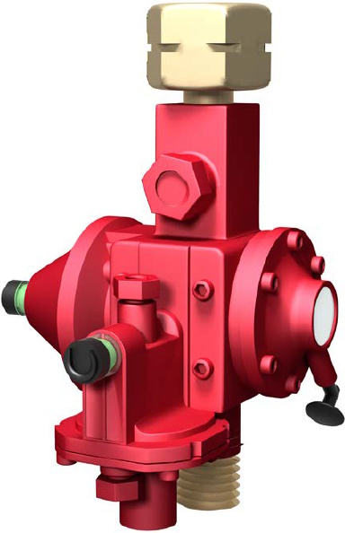
Abb. 24 OPSO/UPSO Druckregeleinrichtung mit Überdruck-Abblaseventil mit begrenztem Durchfluss (Pressure Relief Valve (PRV)) und einer Versorgungsleistung von z. B. 4 kg/h
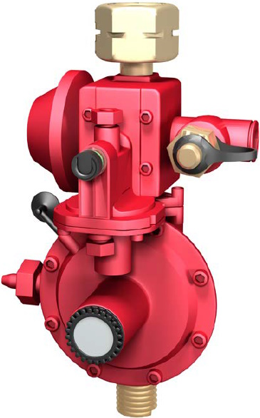
Abb. 25 OPSO/UPSO Druckregeleinrichtung mit Überdruck-Abblaseventil mit begrenztem Durchfluss (Pressure Relief Valve (PRV)) und einer Versorgungsleistung von z. B. 12 kg/h
5.1.6.2 Druckregeleinrichtungen in Mitteldruckanlagen mit Flüssiggasflaschen
Bei allen Flüssiggasanlagen, die mit einem festen oder verstellbaren Ausgangsdruck > 100 mbar bis 4 bar (Mitteldruck) betrieben werden, benötigt die Druckregeleinrichtung nach DIN 4811 Abschnitt 4.5 wahlweise (je nach Einsatzgebiet) folgende Sicherheitseinrichtung:
Die Nennansprechdrücke von OPSO und PRV sind in Tabelle 7 der DIN 4811 festgelegt.
An einer Druckregeleinrichtung, die an eine Flüssiggasflasche oder -flaschenanlage angeschlossen wird und einen verstellbaren Ausgangsdruck besitzt, muss zur reproduzierbaren Einstellung und Anzeige des eingestellten Betriebsdrucks entweder eine Zahlenskala oder ein Manometer vorhanden sein, siehe Abbildung 26.
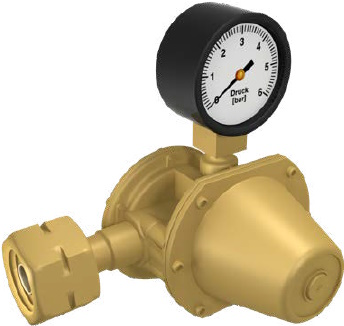
Abb. 26 Mitteldruckregeleinrichtung mit Leckgassicherung
Im Baubereich dürfen bei ständiger Beaufsichtigung ortsveränderliche Verbrauchsanlagen ohne Einrichtungen gegen ungeregelten Druckanstieg betrieben werden.
5.1.6.3 Druckregeleinrichtungen in Niederdruckanlagen mit ortsfestem Druckgasbehälter
Bei der Entnahme von Flüssiggas aus einem ortsfesten Druckgasbehälter mit ungeregeltem Eingangsdruck und einem festen Nennausgangsdruck von 0,05 bar (50 mbar) zur Versorgung von Gasgeräten ist die DIN 4811 Abschnitt 4.2 und 4.3 zu beachten. Diese Abschnitte legen die Anforderungen sowohl für Druckregeleinrichtungen der ersten Stufe als auch für Druckregeleinrichtungen, in denen die erste und zweite Stufe vereinigt ist (Gerätekombination), sowie für deren Sicherheitseinrichtungen fest. Danach muss der Ausgangsdruck der Druckregeleinrichtung durch eine Überdruck-Sicherheitsabsperreinrichtung (OPSO bzw. alt SAV) in Verbindung mit einem Überdruck-Abblaseventil mit begrenztem Durchfluss (PRV) nach Tabelle 1, DIN 4811 Abschnitt 4.2.4 abgesichert sein.
Als sicherheitsrelevante Ausrüstung wird für die Verwendung im gewerblichen Bereich eine automatisch wirkende kombinierte Überdruck-Unterdruck-Sicherheitsabsperreinrichtung (OPSO/UPSO) empfohlen. Bei der Verwendung dieser Druckregeleinrichtungen im Arbeitsraum muss eine Abblaseleitung ins Freie verlegt werden.
Zusätzlich darf für die Verwendung im Freien für den Betriebsdruck von 0,05 bar (50 mbar) ein Druckentlastungsventil (DEV) nach Anhang C, DIN 4811 eingebaut sein.
Beispiele der möglichen Anlageninstallation sind gezeigt
5.1.6.4 Druckregeleinrichtungen in Mitteldruckanlagen mit ortsfestem Druckgasbehälter
Bei der Entnahme von Flüssiggas aus einem ortsfesten Druckgasbehälter mit ungeregeltem Eingangsdruck und einem festen oder einstellbaren Ausgangsdruck bis 4 bar ist die DIN 4811 Abschnitt 4.5 zu beachten. Die Nennansprechdrücke von OPSO und PRV sind in den Tabellen 2 bzw. 7 der DIN 4811 festgelegt.
An einer Druckregeleinrichtung mit einem verstellbaren Ausgangsdruck muss zur reproduzierbaren Einstellung und Anzeige des eingestellten Betriebsdrucks entweder eine Zahlenskala oder ein Manometer vorhanden sein.
5.1.7 Rohrleitungen
Fest verlegte Rohrleitungen sind vorrangig vor Schlauchleitungen zu verwenden. Die Unternehmerin oder der Unternehmer hat dafür zu sorgen, dass die Verbrauchseinrichtungen nur unter Verwendung geeigneter Rohrleitungen an Versorgungsanlagen angeschlossen werden. Das beinhaltet die Auswahl der Werkstoffe, Dichtwerkstoffe und weiterer Ausrüstungsteile:
Folgende Anforderungen sind zu erfüllen:
Erstellung von Rohrleitungen ≤ 0,5 bar
Bei der Erstellung von Rohrleitungen mit einem maximal zulässigen Druck PS ≤ 0,5 bar kann auf Inhalte der "Technischen Regel Flüssiggas" (TRF 2021) zurückgegriffen werden, sofern in dieser DGUV Regel keine anderen oder erweiterten Anforderungen genannt werden. Der Verweis auf die TRF gilt nicht für gewerblich genutzte Fahrzeuge (siehe 5.2.8 Flüssiggasanlagen zu Brennzwecken in oder an Fahrzeugen).
Erstellung von Rohrleitungen > 0,5 bar
Bei der Erstellung von Rohrleitungen mit einem maximal zulässigen Druck PS > 0,5 bar sind die Regelungen der Richtlinie 2014/68/EU "Druckgeräterichtlinie" zu beachten.
Prüfungen von Rohrleitungen
Die Unternehmerin oder der Unternehmer hat in der Gefährdungsbeurteilung nach § 3 (6) Betriebssicherheitsverordnung Prüfinhalte, Prüfzuständigkeiten und Prüffristen der Rohrleitungen festzulegen (siehe 6 Prüfungen und Prüffristen von Flüssiggasanlagen zu Brennzwecken).
5.1.8 Schlauchleitungen/Sicherungen bei Schlauchbeschädigungen
Abweichend von der Regelung gemäß 5.1.7 Rohrleitungen – festverlegte Rohrleitungen sind vorrangig vor Schlauchleitungen zu verwenden – dürfen bei ortsveränderlichen Flüssiggasanlagen oder beim Vorliegen besonderer betriebstechnischer Gründe auch Schlauchleitungen zur Installation von Flüssiggasanlagen verwendet werden.
Besondere betriebstechnische Gründe können vorliegen bei der Verwendung von Flüssiggas für
Grundsätzlich gilt für die Verlegung von Schlauchleitungen:
Zu den grundsätzlichen Sicherheitsmaßnahmen gehört außerdem:
Folgende Anforderungen sind zu erfüllen:
| Grundsätzlich dürfen selbst eingebundene Schlauchleitungen mit Schlauchtüllen und Schlauchklemmen nicht verwendet werden (siehe DIN EN 16436-2 (Tabelle A.2)). |
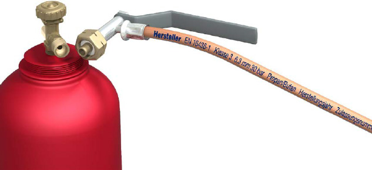
Abb. 27 Schlauchleitung Klasse 3 für maximalen Betriebsdruck 30 bar
Besondere chemische, thermische oder mechanische Beanspruchungen liegen vor, wenn Schlauchleitungen z. B.
|
Prüfungen von Schlauchleitungen
Schlauchleitungen werden hinsichtlich ihrer Prüfzuständigkeiten und Prüfungshöchstfristen entsprechend Betriebssicherheitsverordnung wie Rohrleitungen angesehen. Prüfinhalte und Prüffristen müssen aber die speziellen Eigenschaften von Schlauchleitungen berücksichtigen. Siehe hierzu 5.1.7 Rohrleitungen und 6 Prüfungen und Prüffristen von Flüssiggasanlagen zu Brennzwecken.
5.1.9 Betreiben von Verbrauchsanlagen
Die Unternehmerin oder der Unternehmer hat dafür zu sorgen, dass nur Verbrauchseinrichtungen in Betrieb genommen werden, die den zu erwartenden chemischen, thermischen und mechanischen Beanspruchungen insoweit genügen, dass bei deren Betrieb Beschäftigte nicht gefährdet werden.
| Bei Verbrauchseinrichtungen, die unter den Anwendungsbereich der Verordnung (EU) 2016/426 über Geräte zur Verbrennung gasförmiger Brennstoffe fallen und deren Übereinstimmung mit den Bestimmungen der Verordnung der Hersteller/ Inverkehrbringer durch eine EU-Konformitätserklärung nach Artikel 15 und durch Anbringung des CE-Zeichens nach Artikel 7 der Verordnung nachgewiesen hat, gelten diese Voraussetzungen bei bestimmungsgemäßer Verwendung als erfüllt. Insbesondere müssen die Verbrauchseinrichtungen den wesentlichen Anforderungen gemäß Anhang 1 der genannten Verordnung entsprechen. |
Verbrauchseinrichtungen, die vor dem 01.01.1996 in Verkehr gebracht wurden, müssen eine DVGW-Zulassung haben (DVGW – Deutscher Verein des Gas- und Wasserfaches e.V.). Verbrauchseinrichtungen ohne CE-Kennzeichnung bzw. DVGW-Zulassung dürfen in der Europäischen Gemeinschaft bzw. Bundesrepublik Deutschland nicht eingesetzt werden.
Zusätzlich zur Anbringung der CE-Kennzeichnung auf der Verbrauchseinrichtung ist der Hersteller verpflichtet, in deutscher Sprache
Unabhängig von vorliegender EU-Konformitätserklärung und CE-Kennzeichnung ist für die Flüssiggasanlage und damit auch für die Verbrauchsanlage eine Gefährdungsbeurteilung entsprechend § 3 BetrSichV durchzuführen.
Anlagen bzw. Ausrüstungsteile, z. B. Druckregeleinrichtungen, Sicherheitsventile und Schlauchbruchsicherungen, müssen auf die Anschlusswerte der Verbrauchseinrichtungen abgestimmt sein.
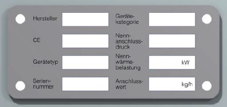
Abb. 28: Beispielhafte Abbildung eines Typenschilds mit Aufschriften
Vor der erstmaligen Inbetriebnahme von Flüssiggasanlagen, deren Prüfung nach § 14 BetrSichV als Arbeitsmittel geregelt ist, muss eine zur Prüfung befähigte Person für Flüssiggasanlagen mit der Durchführung einer Prüfung beauftragt werden (siehe 6 Prüfungen und Prüffristen von Flüssiggasanlagen zu Brennzwecken). Bei der kurzzeitigen Inbetriebnahme von Flüssiggas-Versuchsanlagen im Kleinstmaßstab für Forschungs-, Lehr- bzw. Unterrichtszwecke ist vor Inbetriebnahme eine Gefährdungsbeurteilung sowie Dichtheitskontrolle durch eine fachkundige Person vorzunehmen.
| Weiterführende Informationen zu Flammenüberwachungen | |
|
|
| Weiterführende Informationen zu Druckregeleinrichtungen | |
|
|
5.1.10 Oberflächentemperaturen
Es ist dafür zu sorgen, dass heiße Oberflächen, die nicht unmittelbar für den Arbeitsvorgang erforderlich sind und im Arbeits- und Verkehrsbereich liegen, gegen zufälliges Berühren so gesichert und gekennzeichnet werden, dass Verletzungen verhindert werden. Teile von Verbrauchseinrichtungen, bei denen die Gefahr durch Verbrennung erkennbar ist, benötigen keine gesonderte Kennzeichnung der hohen Oberflächentemperaturen.
| Weiterführende Informationen | |
| Hinsichtlich Oberflächentemperaturen siehe DIN EN ISO 13732-1 "Ergonomie der thermischen Umgebung – Bewertungsverfahren für menschliche Reaktionen bei Kontakt mit Oberflächen – Teil 1: Heiße Oberflächen". | |
Bei einer angenommenen Kontaktdauer zum Material von 1 Sekunde kann die Haut ab einer Oberflächentemperatur von 65 °C Verbrennungen aufweisen.
Bei längeren Kontaktdauern können Verbrennungen schon bei geringeren Oberflächentemperaturen auftreten (siehe Tabelle 5).
Tabelle 5 Verbrennungsschwellen für Kontaktdauern von 1 min und länger
| Material | Verbrennungsschwellen für Kontaktdauern von | |||
| 1 min | 10 min | 8 h und länger | ||
| Unbeschichtete Metalle | 51 °C | 48 °C | 43 °C | |
| Keramische, glas- und steinartige Materialien | 56 °C | 48 °C | 43 °C | |
| Kunststoffe und Holz | 60 °C | 48 °C | 43 °C | |
Quelle: DIN EN ISO 13732-1
Zu den heißen Teilen, bei denen die Gefahr durch Verbrennung besteht, zählen z. B.
5.1.11 Kontrolle der Dichtheit/Feststellung von Undichtheiten
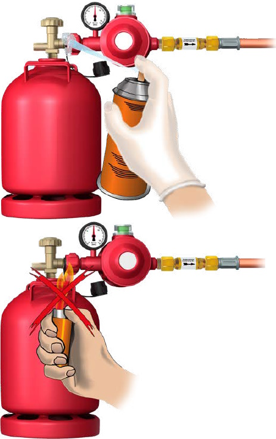
Abb. 29 Dichtheitskontrolle mittels Lecksuchspray nach Anschluss der Druckregeleinrichtung an die Flüssiggasflasche
Eine gefährliche explosionsfähige Atmosphäre kann z. B. auftreten
Die Unternehmerin oder der Unternehmer hat dafür zu sorgen, dass Flüssiggasanlagen vor jeder Verwendung arbeitstäglich kontrolliert werden. Fachkundige Personen dürfen nach Unterweisung die Dichtheitskontrolle sowie die Inaugenscheinnahme auf offensichtliche Mängel durchführen. Zur Unterstützung dienen die von den Herstellern mitgelieferten Unterlagen zu den Ausrüstungsteilen (z. B. Betriebsanleitungen).
Folgende Anforderungen sind zu erfüllen:
Die Dichtheitskontrolle an Flüssiggasanlagen kann z. B. erfolgen
|
| Die Dichtheit darf niemals mit offenem Feuer oder anderen Zündquellen kontrolliert werden! |
Unabhängig von den oben genannten Kontrollen sind die Prüfungen vor Inbetriebnahme, vor Wiederinbetriebnahme nach prüfpflichtigen Änderungen und die wiederkehrenden Prüfungen von Flüssiggasanlagen entsprechend 6 Prüfungen und Prüffristen von Flüssiggasanlagen zu Brennzwecken durchzuführen.
5.1.12 Lüftungseinrichtungen/Abgasleitungen
Bei der Verbrennung von Flüssiggas besteht die größte Gefahr in der Bildung von giftigem Kohlenmonoxid (CO) durch unvollständige Verbrennung (zu geringe Luftzufuhr) infolge mangelhafter Wartung der Verbrauchseinrichtung (z. B. verstopfte Düsen) und unzureichender Be- und Entlüftung. Außerdem werden bei der Verbrennung große Mengen von Kohlendioxid (CO2) und Wasser freigesetzt.
Diese Stoffe müssen durch eine wirksame Be- und Entlüftung des Arbeitsraumes beseitigt werden.
|
Berechnungsbeispiel: Für die vollständige Verbrennung von 1 kg Flüssiggas werden ca. 15 m³ Verbrennungsluft benötigt. Hierbei entstehen 3 kg CO2 und 1,6 kg Wasser. Um den Arbeitsplatzgrenzwert von CO2 (0,5 Vol. %) als Leitkomponente einhalten zu können, sind pro kg Brenngas ca. 330 m³ Luft (Zu- bzw. Abluftmenge) notwendig. Unter Berücksichtigung des Heizwertes von Propan ergibt sich ein erforderlicher Luftvolumenstrom von 26 m³/h je kW Leistung. Ein freistehender Hockerkocher mit z. B. 12,5 kW Nennwärmebelastung benötigt bei Volllast 325 m³/h Zu- und Abluft. |
Kann dies nicht allein durch natürliche Lüftung, wie z. B. durch Fenster und Türen, gewährleistet werden, so muss mindestens eine Abluftanlage mit freier Nachströmung von Außenluft oder gegebenenfalls auch eine raumlufttechnische Anlage mit Zu- und Abluft vorhanden sein.
Schon vor der Anschaffung der geplanten Gasgeräte (A, B oder C, siehe Begriffsbestimmungen) ist deren Art gegebenenfalls unter Hinzuziehung von Fachleuten festzulegen.
Für den Einsatz von Geräten in Küchenbetrieben sind ferner u. a. die VDI 2052 "Raumlufttechnische Anlagen für Küchen" (VDI-Lüftungsregeln) zu beachten.
Übergeordnet sind die nachfolgenden Anforderungen zu berücksichtigen:
| Weitere Informationen | |
|
Erforderliche Mindestquerschnitte von Abgasleitungen siehe: TRF 2021 "Technische Regel Flüssiggas" des DVFG (Deutscher Verband Flüssiggas e. V.)/DVGW (Deutscher Verein des Gas- und Wasserfaches e. V.), sowie die TRGI 2018 "Technische Regel für Gasinstallationen" und die einschlägigen Arbeitsblätter des DVGW (Deutscher Verein des Gas- und Wasserfaches e.V.) |
|
5.1.13 Außerbetriebnahme von Verbrauchsanlagen
Die Unternehmerin oder der Unternehmer hat dafür zu sorgen, dass die Gaszufuhr zur Verbrauchsanlage bei Außerbetriebnahme, Betriebsruhe sowie im Gefahrfall leicht unterbrochen werden kann, um einen unkontrollierten Gasaustritt zu vermeiden.
Die Gaszufuhr zu den Verbrauchseinrichtungen und zur Verbrauchsanlage muss
unterbrochen werden, z. B. durch Schließen des Flaschenventils oder der Hauptabsperreinrichtung und der Absperreinrichtung vor der Verbrauchseinrichtung. Jede angeschlossene Verbrauchseinrichtung muss für sich einzeln absperrbar sein und zwar am Ende der fest verlegten Rohrleitungen. Die Absperreinrichtungen müssen jederzeit zugänglich sein.
Hierzu gehört auch, dass nach dem Verbrauch des Flüssiggases oder nach dem Abschrauben der Druckregeleinrichtung vom Flaschenventil die Ventilverschlussmutter aufgeschraubt und die Ventilschutzkappe wieder angebracht wird.
Längere Arbeitsunterbrechungen liegen nicht vor, wenn Verbrauchseinrichtungen während der Arbeitsunterbrechungen (z. B. in Pausen) beaufsichtigt weiterbetrieben werden.
Durchgehender Betrieb liegt vor, wenn die arbeitsablaufbedingte Betriebsphase länger als eine Arbeitsschicht dauert. Durchgehender Betrieb kann z. B. an Wochenenden und Feiertagen sowie bei Heiz- und Trocknungsprozessen erforderlich sein.
Bei der Außerbetriebnahme von Flüssiggasanlagen ist zwischen zwei Aufstellungsvarianten (Versorgungsanlage und Verbrauchseinrichtung) zu unterscheiden.
Für beide nachfolgenden Varianten gilt:
Vor jeder Verbrauchsanlage (dies kann eine Verbrauchseinrichtung oder mehrere einzelne Verbrauchseinrichtungen sein) muss eine leicht zugängliche Hauptabsperreinrichtung (HAE) eingebaut sein, mit der ein sofortiges Absperren der gesamten Verbrauchsanlage möglich ist.
| Variante 1: Versorgungsanlage und Verbrauchseinrichtung im selben Raum Sofern sich die gesamte Flüssiggasanlage (Flüssiggasflasche, Rohrleitungen, Gasgerät etc.) im Arbeitsraum befindet, ist die Absperreinrichtung der Versorgungsanlage (z. B. Flaschenventil) als Hauptabsperreinrichtung zur Absperrung der Gaszufuhr zu verwenden. Siehe Abbildung 30. 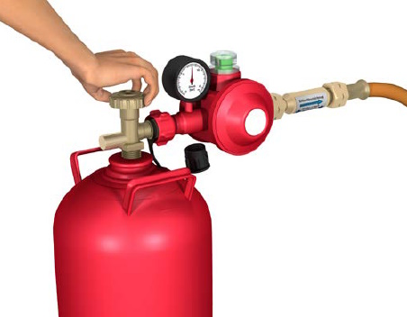 Abb. 30 Zudrehen des Flaschenventils (Flaschenventil = Hauptabsperreinrichtung, Drehrichtung rechts) |
| Variante 2: Versorgungsanlage und Verbrauchseinrichtung räumlich getrennt Bei räumlicher Trennung der Versorgungsanlage von der Verbrauchseinrichtung (z. B. Versorgungsanlage im Freien, Verbrauchseinrichtung im Arbeitsraum oder Aufstellung der Versorgungsanlage in einem separaten Aufstellungsraum), ist eine Hauptabsperreinrichtung (HAE) unmittelbar vor oder nach dem Eintritt der fest verlegten Rohrleitung in das Gebäude an leicht zugänglicher Stelle zu installieren. Außerdem muss nach Einführung der fest verlegten Rohrleitung in den Arbeitsraum eine thermisch auslösende Absperreinrichtung (TAE) zur automatischen Absperrung der Gaszufuhr im Brandfall installiert sein. Siehe Abbildung 31. 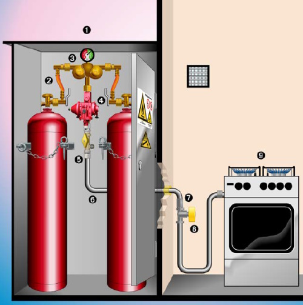 Abb. 31 Flaschenaufstellung im Freien (z. B. im Flaschenschrank)
1 verschließbarer Flaschenschrank |
5.1.14 Innerbetriebliche Beförderung von Flüssiggasanlagen
Folgende Anforderungen sind zu erfüllen:
| Weitere Informationen | |
| Zur Beachtung der Regelungen für die Beförderung von Flüssiggas auf öffentlichen Straßen siehe ADR "Übereinkommen über die internationale Beförderung gefährlicher Güter auf der Straße" und DGUV Information 210-001 "Beförderung von Flüssiggas mit Fahrzeugen auf der Straße". | |
5.1.15 Brandschutz bei Flüssiggasanlagen
Die Unternehmerin oder der Unternehmer ermittelt in der Gefährdungsbeurteilung, ob beim Einsatz der Flüssiggasanlage Brandgefahr besteht oder sich gefährliche explosionsfähige Atmosphäre (g. e. A.) bilden kann. Die Flüssiggasanlagen müssen so betrieben werden, dass eine Brand- und Explosionsgefahr verhindert ist und Verbrennungen oder Verbrühungen vermieden werden (siehe 5.1.1 Gefahrenbereiche und Zonen).
Die Unternehmerin oder der Unternehmer hat dafür zu sorgen, dass Verbrauchseinrichtungen in Räumen und Bereichen, in denen mit gefährlicher explosionsfähiger Atmosphäre gerechnet werden muss, nur unter Beachtung der Brand- und Explosionsschutzmaßnahmen betrieben werden.
| Weitere Informationen | |
| Zur Unterstützung der Gefährdungsbeurteilung und für die Festlegung von Maßnahmen zum Brandschutz wird auf die TRGS 800 "Brandschutzmaßnahmen" und TRGS 510 "Lagerung von Gefahrstoffen in ortsbeweglichen Behältern" hingewiesen. | |
Geeignete Sicherheitsmaßnahmen sind z. B.:
Für das Löschen von Flüssiggasbränden (Brandklasse C nach DIN EN 2) sind geeignete und zugelassene Feuerlöscher, z. B. Pulverlöscher mit ABC- oder BC-Löschpulver (nach DIN EN 3-7) entsprechend der Technischen Regel für Arbeitsstätten "Maßnahmen gegen Brände" ASR A2.2 leicht erreichbar bereit zu stellen. Siehe auch DGUV Information 205-025 "Feuerlöscher richtig einsetzen".
Auszugsweise gibt die Tabelle 6 einen Überblick über geeignete Feuerlöscheinrichtungen für das Löschen von Gasbränden (Brandklasse C).
Alle Arten von Feuerlöschern sind mindestens alle 2 Jahre zu prüfen. Als Nachweis dienen z. B. Prüfvermerke am Feuerlöscher.
Maßnahmen im Brandfall
Wenn ein extrem entzündbares Gas unkontrolliert freigesetzt wird, muss – solange es noch ohne Gefährdung möglich ist – die Gaszufuhr unterbrochen werden.
Brennt das ausströmende Gas und die Gaszufuhr kann nicht unterbrochen werden, dann ist das brennende Gas nicht zu löschen, um die Bildung explosionsfähiger Atmosphäre als Folge der Freisetzung des unverbrannten Gases zu vermeiden.
Im Brandfall sind die Flüssiggasflaschen aus dem brandgefährdeten Bereich zu entfernen, sofern dies ohne Gefährdung möglich ist. Mit dem Bersten der Flaschen muss bei Brandeinwirkung gerechnet werden. Weiterführende Informationen für Feuerwehren und Einsatzkräfte sind in der DGUV Information 205-030 "Umgang mit ortsbeweglichen Flüssiggasflaschen im Brandeinsatz" beschrieben.
Beim kontrollierten Abbrand von austretendem Flüssiggas, das nicht abgestellt werden kann, muss seitens der Feuerwehr eine schnelle und ausreichende Kühlung, z. B. von Flüssiggasflaschen, Behälterwandungen und Rohrleitungen, die im Einflussbereich des Feuers sind, durchgeführt werden. Kühlmaßnahmen sind auch beim Brand im Bereich von ortsfesten Behältern erforderlich.
Tabelle 6 Brandklassen nach DIN EN 2: Beispielhaft zu löschende Stoffe
| Brandklassen DIN EN 2 | |||||
| A | B | C | D | F | |
| zu löschende Stoffe | zu löschende Stoffe | ||||
| Arten von Feuerlöschern | Feste, glut-bildende Stoffe | Flüssige oder flüssig werdende Stoffe | Gasförmige Stoffe, auch unter Druck | Brennbare Metalle (Einsatz nur mit Pulver-brause) | Brände von Speiseöl und Speisefetten |
| Pulverlöscher mit ABC-Löschpulver | + | + | + | – | – |
| Pulverlöscher mit BC-Löschpulver | – | + | + | – | – |
| Pulverlöscher mit Metallbrandpulver | – | – | – | + | – |
| Kohlendioxidlöscher*) | – | + | – | – | – |
| Wasserlöscher auch mit Zusätzen, z. B. Netzmittel, Frostschutzmittel oder Korrosionsschutzmittel | + | – | – | – | – |
| Wasserlöscher mit Zusätzen, die in Verbindung mit Wasser auch Brände der Brandklasse B löschen | + | + | – | – | – |
| Fettbrandlöscher (Speziallöschmittel) | (+) | (+) | – | – | + |
| Schaumlöscher | + | + | – | – | – |
+ = geeignet; - = nicht geeignet; (+) Mögliche Brandklassen-Kombination mit der Brandklasse F nach geprüfter Eignung und Zulassung
*) Beim Einsatz in kleinen, engen Räumen besteht Erstickungsgefahr
Quelle: BGN
Besteht die Gefahr, dass ausströmendes Gas nicht mehr unter Kontrolle gebracht werden kann, oder die Gefahr eines Brandes im Bereich von Verbrauchs- und Versorgungsanlagen,
Die Feuerwehr muss im Einsatzfall über das Vorhandensein von Flüssiggasflaschen im Brandbereich oder dessen Nähe informiert werden.
Bei der Alarmierung über Notruf 112 können durch die Leitstelle folgende Fragen gestellt werden:
Die Leitstelle beendet das Gespräch!
Es ist wichtig, bei der Meldung eines Brandes auf mögliche Gefahrenstellen hinzuweisen, wie z. B.:
|
Grundsätzlich gilt:
Flüssiggasflaschen, die gebrannt haben, örtlich erhitzt oder der Brandhitze ausgesetzt waren, müssen deutlich entsprechend gekennzeichnet werden, damit sie nicht wiederverwendet werden. Sie müssen an den Lieferanten bzw. an das Füllwerk zurückgegeben werden.
5.1.16 Instandhaltung
Die Unternehmerin oder der Unternehmer hat dafür zu sorgen, dass die erforderlichen Instandhaltungsarbeiten durchgeführt werden, um die Flüssiggasanlage in einem sicheren Zustand zu erhalten. Hinsichtlich der Nutzungsdauer von Ausrüstungsteilen, z. B. Druckregeleinrichtungen sowie Rohrleitungen, sind die Angaben der Hersteller zu beachten. Entsprechend der Gefährdungsbeurteilung – aber spätestens nach 10 Jahren – sind die Druckregeleinrichtungen, Leckgassicherungen und Schlauchleitungen der Flüssiggasanlage auszutauschen. Notwendige Instandhaltungsarbeiten sind unverzüglich durchzuführen und die dabei erforderlichen Schutzmaßnahmen zu treffen. Für die Instandhaltung sind insbesondere die Regelungen des § 10 der BetrSichV zu beachten.
Für die Instandhaltung dürfen nur geeignete Ersatzteile und Hilfsmittel zur Verfügung gestellt und verwendet werden.
Die Forderung nach geeigneten Ersatzteilen ist erfüllt durch Verwendung von
Geeignete Hilfsmittel sind z. B.
Bei Mängeln an Ausrüstungsteilen von Flüssiggasflaschen, z. B. Flaschenventile, die sich nicht mehr von Hand bedienen lassen, ist die Instandhaltung der Flüssiggasflaschen durch den Flüssiggasversorger durchzuführen.
|
In der Gefährdungsbeurteilung ist zu ermitteln, ob eine Instandhaltungsmaßnahme an der Flüssiggasanlage prüfpflichtig ist. Bei Flüssiggasanlagen gemäß Anhang 3 Abschnitt 2 BetrSichV sind nach Austausch von Ausrüstungsteilen der Verbrauchsanlage, soweit deren sichere Verwendung von den Montagebedingungen abhängt, oder die schädigenden Einflüssen unterliegen, grundsätzlich Prüfungen gemäß § 14 BetrSichV durchzuführen (siehe TRBS 1201 "Prüfungen und Kontrollen von Arbeitsmitteln und überwachungsbedürftigen Anlagen").
Hiervon betroffen ist z. B. der Austausch von
Notwendige Prüfungen im Rahmen von Instandhaltungsarbeiten an Flüssiggasanlagen gemäß Anhang 3 Abschnitt 2 BetrSichV sind von einer zur Prüfung befähigten Person für Flüssiggasanlagen durchzuführen (siehe 6 Prüfungen und Prüffristen von Flüssiggasanlagen zu Brennzwecken). Werden im Rahmen von Instandsetzungsmaßnahmen an Verbrauchsanlagen gemäß TRBS 1112 Schlauchleitungen durch identische oder baugleiche (mit identischen Sicherheits- und Betriebsparametern) ausgetauscht, ist dies keine prüfpflichtige Änderung, wenn:
Unabhängig hiervon sind Kontrollen vor Wiederverwendung durch von den Unternehmerinnen und Unternehmern besonders unterwiesene, fachkundige Beschäftigte durchzuführen. |
5.1.17 Verhalten bei Störungen
Die Gaszufuhr zu den Verbrauchseinrichtungen und zur Verbrauchsanlage muss bei Störungen, z. B. unvollständiger Verbrennung oder ungewolltem Austritt von unverbranntem Flüssiggas, sofort unterbrochen werden.
In diesem Fall ist die zugehörige Absperreinrichtung unverzüglich zu schließen, wenn dies ohne Gefährdung möglich ist. Falls aus verfahrenstechnischen Gründen andere Absperrmaßnahmen getroffen werden müssen, ist dies in der Gefährdungsbeurteilung zu berücksichtigen und in die Betriebsanweisung aufzunehmen.
Eine Wiederinbetriebnahme der Flüssiggasanlage darf erst erfolgen, nachdem die Störungsursache beseitigt und eine Prüfung vor Wiederinbetriebnahme durch eine zur Prüfung befähigte Person für Flüssiggasanlagen durchgeführt wurde.
Die Unternehmerin oder der Unternehmer hat dafür zu sorgen, dass
5.1.18 Anzeigen von Unfällen und Schadensfällen
Die Unternehmerin oder der Unternehmer muss gemäß § 19 BetrSichV der zuständigen Behörde folgende Ereignisse an Flüssiggasanlagen unverzüglich anzeigen:
5.1.19 Lagerung von Flüssiggasflaschen
Unter Lagern von Flüssiggasflaschen wird das Aufbewahren zur späteren Verwendung sowie zur Abgabe an andere verstanden. Es schließt die Bereitstellung zur Beförderung ein, wenn die Beförderung nicht innerhalb von 24 Stunden nach der Bereitstellung oder am darauffolgenden Werktag erfolgt. Ist dieser Werktag ein Samstag, so endet die Frist mit Ablauf des nächsten Werktags.
Bei Nachweis der Dichtheit der Flüssiggasflaschenventile durch Kontrolle, z. B. mit schaumbildenden Mitteln, ist bei der Lagerung von Flüssiggas keine Zone vorhanden.
Dies gilt auch für teilentleerte Flaschen, wenn diese Kontrolle vor Rückführung in das Lager durchgeführt wurde.
Die Unternehmerin oder der Unternehmer muss immer die möglichen Gefahrenbereiche bewerten.
Auch bei der Lagerung von Flüssiggas müssen Gefährdungen vermieden werden. Erfahrungsgemäß ist deshalb die Lagerung von Flüssiggasflaschen im Freien der Lagerung in Räumen vorzuziehen.
Bei der Festlegung von Maßnahmen im Zusammenhang mit der Lagerung sind neben der Bevorratung an sich auch folgende Tätigkeiten zu berücksichtigen:
Generell gilt, dass bei mehr als einer Flasche oder mehr als 50 kg Flüssiggas die Flüssiggasflaschen in einem Lager aufbewahrt werden müssen. Zur Lagerung von Einwegbehältern (Druckgaskartuschen) siehe 5.2.2 Flüssiggasanlagen mit Einwegbehältern (Druckgaskartuschen).
Es werden die folgenden Arten der Lagerung unterschieden:
Wegen der extremen Entzündbarkeit und Explosionsgefahr von Flüssiggas werden an die verschiedenen Arten der Lagerung bestimmte Anforderungen gestellt.
Darüber hinaus sind, abhängig von der gelagerten Menge an Flüssiggas, weitere Schutzmaßnahmen zu ergreifen. Dabei werden drei Mengen-Bereiche unterschieden:
Tabelle 7 Geforderte Schutzmaßnahmen in Abhängigkeit von der Lagermenge
| Geforderte Schutzmaßnahmen in Abhängigkeit von der Lagermenge | |||
| Flüssiggas in Flüssiggasflaschen | |||
| eine Flüssiggasflasche oder max. 50 kg* | mehr als eine Flüssiggasflasche oder mehr als 50 kg, bis zu 200 kg |
> 200 kg | |
| Allgemeine Schutzmaßnahmen | X | X | X |
| Weitere Schutzmaßnahmen | X | X | |
| Spezifische Schutzmaßnahmen für Großmengen | X | ||
*) Beim Überschreiten einer der beiden Mengen ist die nächste Spalte anzuwenden.
Allgemeine Schutzmaßnahmen
Unabhängig von der Lagermenge müssen die folgenden Anforderungen bezüglich der Lagerung von Flüssiggasflaschen erfüllt sein:
Kennzeichnung der Flüssiggasflaschen:
Gefahrstoffe wie Flüssiggas müssen eindeutig identifizierbar sein. Das erforderliche Etikett muss neben dem Stoffnamen und der Inhaltsmenge auch Piktogramme/Gefahrzettel, Signalwort, Gefahrenhinweise für Entzündbarkeit tragen.
Tabelle 8 Verbindliches Element zur Gefahrgutkennzeichnung
| Piktogramm/Gefahrzettel | Signalwort | Gefahrenhinweis | |
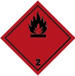 |
Gefahr | H220 | Extrem entzündbares Gas |
Weitere Schutzmaßnahmen bei Lagerung von mehr als einer Flüssiggasflasche oder Mengen > 50 kg
Bei den oben genannten Mengen müssen Flüssiggasflaschen ohne Ausnahme in einem Lager bzw. Sicherheitsschrank (gemäß DIN EN 14470-2) aufbewahrt werden. Im Falle eines Lagers müssen folgende Schutzmaßnahmen ergriffen werden.
Kennzeichnung des Lagers:
Das Lager für Flüssiggas muss mit Piktogrammen der Sicherheits- und Gesundheitsschutzkennzeichnung wie folgt gekennzeichnet werden:
Tabelle 9 Kennzeichnung des Lagers
| Piktogramm | ID | Wortlaut |
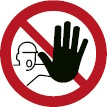 |
D-P006 | Zutritt für Unbefugte verboten (aus DIN 4844-2 "Graphische Symbole – Sicherheitsfarben und Sicherheitszeichen – Teil 2" Ausgabe November 2021) |
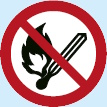 |
P003 | Keine offene Flamme; Feuer, offene Zündquelle und Rauchen verboten |
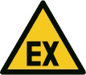 |
D-W021 | Warnung vor explosionsfähiger Atmosphäre |
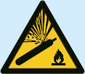 |
W029 | Warnung vor Gasflaschen |
Generell gilt, dass die Kennzeichnung deutlich erkennbar und dauerhaft angebracht sein muss.
Bauliche Schutzmaßnahmen:
Sicherung des Lagergutes:
Organisatorische Sicherheitsmaßnahmen:
Zusammenlagerung:
Bei Lagerung von mehr als einer Flüssiggasflasche oder Mengen größer 50 kg sind die Zusammenlagerungsregeln des Kapitels der TRGS 510 "Zusammenlagerung, Getrenntlagerung und Separatlagerung" zu beachten, wenn die Gesamtmenge aller Gefahrstoffe 200 kg überschreitet.
Grundsätzlich gilt:
Flüssiggas ist der Lagerklasse 2 A zugeordnet. Flüssiggasflaschen dürfen ohne weitere Sicherheitsmaßnahmen mit nichtbrennbaren Stoffen zusammen gelagert werden, jedoch nicht mit brennbaren Stoffen, wie beispielsweise Papier, Holz oder brennbaren Flüssigkeiten sowie mit giftigen Stoffen.
Spezifische Schutzmaßnahmen bei Mengen > 200 kg
Brandschutzmaßnahmen:
Bei Mengen > 200 kg muss das Lager zusätzlich mit dem Warnzeichen W021 gekennzeichnet und zusätzliche Brandschutzmaßnahmen ergriffen werden. Siehe hierzu TRGS 510 "Lagerung von Gefahrstoffen in ortsbeweglichen Behältern".
Tabelle 10 Zusätzliche Kennzeichnung eines Lagers mit einer Lagermenge > 200 kg
| Piktogramm | ID | Wortlaut |
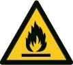 |
W021 | Warnung vor feuergefährlichen Stoffen |
Lagerung entleerter Flüssiggasflaschen:
Erfahrungsgemäß sind entleerte Gebinde niemals ganz leer – dies gilt auch für Flüssiggasflaschen. Auch entleerte Flüssiggasflaschen können umfallen, wenn sie nicht gesichert stehen. Weiterhin ist darauf zu achten, dass bei der Lagerung und dem Transport die Flaschenventile fest verschlossen sind, Ventilverschlussmuttern von Kleinflaschen aufgeschraubt und Schutzkappen von Flüssiggasflaschen angebracht sind. Darüber hinaus sind entleerte Flüssiggasflaschen vor gefährlicher Erwärmung von über 40 °C, z. B. durch Heizkörper oder Heizgeräte mit offener Flamme, zu schützen.
5.1.19.1 Lagerung im Freien
Unter einem Lager im Freien versteht man
Beim Lagern im Freien gelten im Gegensatz zum Lagern in Räumen weitaus weniger strenge Anforderungen, da hier insbesondere die Belüftung durch die Bauart leichter zu realisieren ist. Jedoch werden auch an diese Art von Lagerung weitere Anforderungen gestellt, die im Folgenden aufgeführt werden.
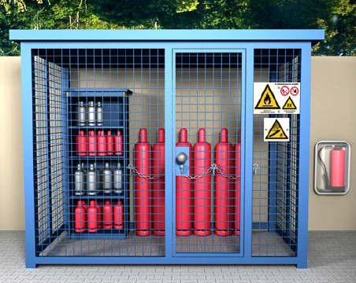
Abb. 32 Lagerung von Flüssiggasflaschen im Freien
Schutzmaßnahmen
Zu beachten: Insbesondere beim Lagern im Freien kann es bei direkter Sonneneinstrahlung durch Temperaturanstieg zu einem starken Druckanstieg in der Flüssiggasflasche kommen (siehe Anhang 1, Diagramm 1 "Dampfdruckdiagramm").
Maße der Gefahrenbereiche beim Lagern im Freien
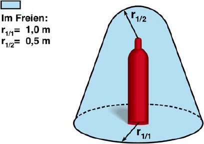
Abb. 33 Festgelegte Maße für den Gefahrenbereich bei der Lagerung im Freien
5.1.19.2 Lagerung in Räumen
Unter Lagern in Räumen versteht man die Unterbringung von Flüssiggasflaschen in geschlossenen Räumen bzw. in Räumen mit maximal einer offenen Seite.
Beim Lagern in Räumen werden drei verschiedene Bereiche unterschieden und dementsprechend andere Anforderungen gestellt:
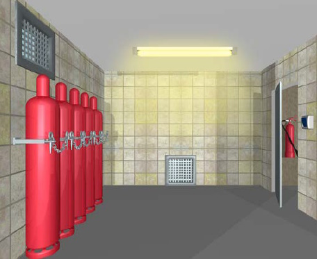
Abb. 34 Lagern von Flüssiggasflaschen im Lagerraum
Schutzmaßnahmen
Generell gelten – unabhängig davon, in welcher Räumlichkeit Flüssiggasflaschen gelagert werden – die folgenden Sicherheitsanforderungen:
Gefahrenbereiche beim Lagern in Räumen
Beträgt die Fläche des Lagerraums < 20 m², ist der gesamte Raum als Gefahrenbereich anzusehen.
Beträgt die Fläche des Lagerraums ≥ 20 m², gilt als Gefahrenbereich:
Siehe Abbildung 35.
Tabelle 11 Gefahrenbereiche beim Lagern in Räumen nach TRGS 510
| Gefahrenbereiche beim Lagern von Flüssiggasflaschen in Räumen | |
| Fläche Lagerraum < 20 m² Hier ist der gesamte Raum Gefahrenbereich |
Fläche Lagerraum ≥ 20 m² Radius r2/1 = 2,0 m um die Flüssiggasflaschen Höhe r2/2 = 1,0 m um Flaschenventil |
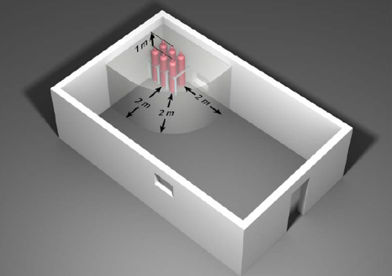
Abb. 35 Geometrische Abmessungen für den Gefahrenbereich im Lagerraum ≥ 20 m²
Spezielle Anforderungen an Lager in Arbeitsräumen
Zu den Arbeitsräumen zählen beispielsweise Küchen, Verkaufsräume und Werkstätten. Hier müssen Flüssiggasflaschen, die nicht unter Einhaltung der in 5.1.3.1 Aufstellung von Flüssiggasflaschenanlagen genannten Menge (Priorität 3) zum Verbrauch bereitgehalten sind, in einem Sicherheitsschrank entsprechend der Empfehlung nach TRGS 510 "Lagerung von Gefahrstoffen in ortsbeweglichen Behältern" gelagert werden (Sicherheitsschrank entsprechend DIN EN 14470-2).
Lagerung in Räumen unter Erdgleiche
Grundsätzlich gilt ein Verbot der Lagerung von Flüssiggas in Räumen unter Erdgleiche, wie beispielsweise in Kellerräumen.
Die möglichen Ausnahmen bedingen einen erheblichen sicherheitstechnischen Aufwand und besondere räumliche Anforderungen (siehe TRGS 510). Deshalb wird von einer Lagerung unter Erdgleiche abgeraten.
Für alle unter diesem Abschnitt behandelten besonderen Flüssiggasanlagen gelten grundsätzlich auch alle Regeln, die unter Abschnitt 5.1 Gemeinsame Regeln für alle Flüssiggasanlagen beschrieben sind.
5.2.1 Flüssiggasanlagen für Bauarbeiten zum Schmelzen, Vorwärmen und Auftragen von Baustoffen
5.2.1.1 Besondere Flüssiggasanlagen für Bauarbeiten unter Erdgleiche und in engen Räumen
Der Einsatz von Flüssiggasanlagen im Bauwesen ist von einer hohen Mobilität der Anlagen und von besonderen örtlichen und zeitlichen Gegebenheiten geprägt. Die Unternehmerin oder der Unternehmer hat bei Bauarbeiten die Möglichkeit, abweichend von 5.1.3.1 Aufstellung von Flüssiggasflaschenanlagen (6) Flüssiggasflaschenanlagen auch in Bereichen unter Erdgleiche und in engen Räumen einzusetzen, wenn dies aus betriebstechnischen Gründen notwendig ist.
Wenn der Einsatz unter Erdgleiche oder in engen Räumen geplant ist, müssen folgende zusätzliche Voraussetzungen gegeben sein:
Bei der Dimensionierung der Anlage ist darauf zu achten, dass sich im Arbeitsbereich nur die angeschlossene Flasche befindet. Es darf abweichend von den Regelungen der TRBS 3145/TRGS 745 kein Bereithalten und auch kein Flaschenwechsel im Arbeitsbereich stattfinden.
| Trotz der möglichen Abweichungen ist das Arbeiten mit Flüssiggas in Bohrungen und bei Arbeiten unter Druckluft nicht zulässig! |
5.2.1.2 Geräte zum Heizen und Trocknen
| Heizgeräte zum Austrocknen dürfen nur in Räumen mit einer für die Verbrennung ausreichenden Luftzufuhr betrieben werden (siehe 5.1.12 Lüftungseinrichtungen/Abgasleitungen). In diesen Räumen ist der ständige Aufenthalt von Personen verboten. |
Auf das Verbot ist an den Eingängen der Räume durch das allgemeine Verbotszeichen mit einem Zusatzzeichen mit der Aufschrift "Der ständige Aufenthalt von Personen ist in diesen Räumen verboten" hinzuweisen (nach ASR A1.3 "Sicherheits- und Gesundheitsschutzkennzeichnung" D-P006).
Tabelle 12 Allgemeines Verbotszeichen an Räumen mit Heizgeräten
| Piktogramm | ID | Wortlaut |
| D-P006 | Zutritt für Unbefugte verboten |
Wenn geplant ist, in Räumen über Erdgleiche Verbrauchseinrichtungen zum Austrocknen und Heizen im durchgehenden Betrieb einzusetzen, muss folgendes beachtet werden:
| Wenn Heizgeräte unter Erdgleiche eingesetzt werden sollen, dürfen nur Heizgeräte mit Gebläse eingesetzt werden! Heizgeräte mit Gebläse sind auch erforderlich, wenn die Verbrauchseinrichtungen und zugehörige Druckgasbehälter im Freien oder in Räumen über Erdgleiche betrieben werden, bei denen die erwärmte Luft über flexible Schläuche in Räume geleitet wird. |
Bei der Verwendung von Handbrennern hat die Unternehmerin oder der Unternehmer dafür zu sorgen, dass
5.2.1.3 Ortsveränderliche Schmelzöfen mit Flüssiggas-Feuerung
Schmelzöfen, die fest mit Straßenfahrzeugen verbunden oder Bestandteil von Straßenfahrzeugen sind, werden den ortsveränderlichen Schmelzöfen gleichgestellt. Je nach Art des eingebauten Brenners werden unterschiedliche Anforderungen an die Ausrüstung sowie an die notwendigen sicherheitstechnischen Einrichtungen des Ofens gestellt. Diese Anforderungen sind der Betriebsanleitung des Herstellers zu entnehmen.
Schmelzgeräte und Warmhaltegeräte dürfen gemäß DIN 30695-1: "Ortsveränderliche Schmelzöfen mit Flüssiggas-Feuerung" für bituminöse oder andere heiß zu verarbeitende Baustoffe nicht ohne Flammenüberwachungseinrichtung betrieben werden. Zusätzlich müssen alle Öfen mit mehr als 30 Liter Füllmenge ein geeignetes fest eingebautes Thermometer haben. Öfen mit mehr als 50 Liter Füllmenge müssen eine Einrichtung haben, die ein Überschreiten der höchstzulässigen Schmelzguttemperatur selbsttätig verhindert.
5.2.1.4 Vorwärmgeräte für Straßenbeläge
Wenn flüssiggasbetriebene Vorwärmgeräte für Straßenbeläge verwendet werden sollen, müssen alle Maßnahmen zum sicheren Betrieb der Vorwärmgeräte in einer Betriebsanweisung (siehe 5.1.2 Explosionsschutzdokument) erfasst und die Beschäftigten unterwiesen werden. Grundlage dieser Betriebsanweisung ist neben den staatlichen Vorschriften und den Vorschriften der Unfallversicherungsträger auch die Bedienungsanleitung des Herstellers.
Folgende Inhalte müssen in der Betriebsanweisung als Anweisungen an den Maschinenführer oder die -führerin mindestens enthalten sein:
5.2.1.5 Mobile Verbrauchsanlagen mit Entnahme von Flüssiggas aus der Flüssigphase
Die Unternehmerin oder der Unternehmer hat dafür zu sorgen, dass mobile Verbrauchsanlagen mit Entnahme des Flüssiggases aus der Flüssigphase nur dann in Betrieb genommen werden, wenn sie den zu erwartenden Beanspruchungen sicher genügen. Beschäftigte dürfen bei deren Betrieb zu keiner Zeit gefährdet werden.
Grundsätzlich sind vor jeder Inbetriebnahme der Verbrauchseinrichtung alle Anschlüsse auf Dichtheit zu kontrollieren.
Verbrauchsanlagen mit Entnahme von Flüssiggas aus der Flüssigphase müssen nach jedem Absperren der Gaszufuhr restlos entleert werden. Die Nachbrennzeit muss so bemessen sein, dass die ausdampfende Restgasmenge auf ein nicht zündfähiges Gemisch reduziert wird.
Die Unternehmerin oder der Unternehmer muss sicherstellen, dass ausschließlich Verbrauchsanlagen zum Einsatz kommen, bei denen die Gaszufuhr zu den Verdampfungsbrennern jederzeit unterbrochen werden kann.
| Anlagen mit Verdampfungsbrennern dürfen nicht unter Erdgleiche betrieben werden. |
Die Zündung der Anlage darf nur in Bereichen vorgenommen werden, in denen keine Gefahr des Eindringens von Flüssiggas in den Untergrund oder in tiefergelegene Räume besteht.
Die Unternehmerin oder der Unternehmer hat dafür zu sorgen, dass abweichend von der TRBS 3145/TRGS 745 "Ortsbewegliche Druckgasbehälter – Füllen, Bereithalten, innerbetriebliche Beförderung, Entleeren" die Verbrauchsanlagen mit Entnahme von Flüssiggas aus der Flüssigphase
durch eine zur Prüfung befähigte Person für Flüssiggasanlagen gemäß TRBS 1203 "Zur Prüfung befähigte Personen" auf ihren betriebstechnischen Zustand geprüft werden (siehe 6 Prüfungen und Prüffristen von Flüssiggasanlagen zu Brennzwecken). Die Prüfergebnisse sind schriftlich zu dokumentieren und an der Verwendungsstelle vorzuhalten.
An Verbrauchsanlagen mit Entnahme von Flüssiggas aus der Flüssigphase sind vorhandene Feuerlöscher jährlich zu prüfen.
5.2.2 Flüssiggasanlagen mit Einwegbehältern (Druckgaskartuschen)
| Die Verwendung einer Flüssiggasanlage mit Versorgung aus einer "Anstechkartusche" ist im gewerblichen Bereich verboten. |
Begründung:
Beim Aufschrauben der in der Halterung befindlichen Anstechkartusche wird diese durch einen in der Verbrauchseinrichtung befindlichen Dorn geöffnet und kann danach nicht wieder dicht verschlossen werden. Dadurch besitzt die Anstechkartusche kein Hauptabsperrventil, das z. B. zum Arbeitsschluss geschlossen werden muss (siehe 5.1.13 Außerbetriebnahme von Verbrauchsanlagen). Bei einer entstehenden Undichtheit können z. B. aus einer Anstechkartusche mit 190 g Flüssiggas ca. 6 m³ explosionsfähiges Gas-Luft-Gemisch entstehen.
Im gewerblichen Bereich erlaubt ist die Verwendung von Einwegbehältern, wie Ventilkartusche und metallische Einwegflasche.
Eine Flüssiggasanlage mit Einwegbehälter darf nur betrieben werden, wenn
| Eine Flüssiggasanlage mit Einwegbehälter muss nach jeder Benutzung auf das geschlossene Nadelventil des Brenners der Verbrauchseinrichtung sowie auf äußerlich erkennbare Mängel kontrolliert werden. |
Die Einwegbehälter und Flüssiggasanlagen mit eingesetzten Einwegbehältern dürfen nicht an folgenden Orten gelagert werden:
Bei der Lagerung von Flüssiggas in Einwegbehältern (Druckgaskartuschen) müssen diese ab einer Menge von mehr als 20 Kilogramm oder mehr als 50 Stück (nach Wahl der Unternehmerin oder des Unternehmers) in einem Lager aufbewahrt werden.
Das Auswechseln des Einwegbehälters ist im Freien oder in besonders geschützten Bereichen (z. B. unter Laborabzügen) und in Bereichen ohne Zündquellen durchzuführen.
Der Einwegbehälter ist vor der Entsorgung zu entleeren.
Verwendung von tragbaren Tischkochern (mit Einwegbehältern)
Vor der Verwendung von "tragbaren Tischkochern" besteht die Pflicht zu ermitteln, ob die Verbrauchseinrichtung vom Hersteller für die gewerbliche Verwendung vorgesehen ist.
| Oft sind solche Produkte nur für die private Verwendung im Freien (z. B. Camping) vorgesehen. Herstellerangaben wie z. B. "eignet sich hervorragend für Picknicks, Tagesausflüge und alle Gelegenheiten, bei denen man unterwegs nicht auf eine frisch zubereitete Mahlzeit verzichten möchte", deuten darauf hin. |
Die Verbrauchseinrichtung muss den wesentlichen Anforderungen des Anhang I der Verordnung (EU) 2016/426 über Geräte zur Verbrennung gasförmiger Brennstoffe entsprechen. Hier ist u. a. festgelegt, dass die Freisetzung von unverbranntem Gas in allen Situationen verhindert wird, die zu einer gefährlichen Ansammlung von unverbranntem Gas führen können. Daher muss die Verbrauchseinrichtung z. B. mit einer Flammenüberwachung ausgestattet sein.
| Bevor ein tragbarer Tischkocher eingesetzt werden soll, ist darauf zu achten, dass nur Kochgefäße zugehöriger Größe verwendet werden. Die Verwendung größerer Kochgefäße (größerer Durchmesser) führt zu einer unzulässigen Temperaturerhöhung, die auf den Einwegbehälter einwirkt und diesen zum Bersten bringen kann. Durch den plötzlichen Austritt des Flüssiggases ist mit schwersten Brandverletzungen zu rechnen. |
| Tischkocher dürfen nicht mit brennender Flamme transportiert werden. |
5.2.3 Verbrauchsanlagen in Laboratorien
Die Unternehmerin oder der Unternehmer haben in Laboratorien Maßnahmen gegen den unbefugten Betrieb von Verbrauchsanlagen in Räumen zu treffen.
Dies kann z. B. erreicht werden durch Absperreinrichtungen vor den Räumen. Die Absperreinrichtungen sind gegen unbeabsichtigtes Öffnen zu sichern.
| Weitere Informationen | |
| Hinsichtlich der Gasinstallationen von Verbrauchsanlagen in Laboratorien siehe DVGW-Arbeitsblatt G 621 "Gasinstallationen in Laborräumen und naturwissenschaftlichen Unterrichtsräumen – Planung, Erstellung, Änderung, Instandhaltung und Betrieb". | |
5.2.4 Flüssiggasanlagen in Einrichtungen für das Unterrichtswesen
Hinsichtlich Aufstellung, Installation und Betrieb der Flüssiggasanlagen sind grundsätzlich die Anforderungen dieser DGUV Regel zu beachten. Bei Flüssiggasanlagen für das Unterrichtswesen ist zusätzlich das DVGW-Arbeitsblatt G 621 "Gasinstallationen in Laborräumen und naturwissenschaftlichen Unterrichtsräumen – Planung, Erstellung, Änderung, Instandhaltung und Betrieb" zu beachten.
Für die Lagerung von Behältern mit Flüssiggas im Unterrichtswesen gelten die Anforderungen der TRGS 510 "Lagerung von Gefahrstoffen in ortsbeweglichen Behältern".
Prüfungen der Flüssiggasanlagen in Unterrichtsräumen sind entsprechend 6 Prüfungen und Prüffristen von Flüssiggasanlagen zu Brennzwecken vorzunehmen.
Aufstellung von Flüssiggasflaschen in Einrichtungen des Unterrichtswesens
Flüssiggasflaschen sind stehend aufzubewahren und für die Entnahme aus der gasförmigen Phase stehend anzuschließen. Sie müssen so aufgestellt werden, dass eine Temperatur von 40 °C nicht überschritten wird und sie gegen mechanische Beschädigungen sowie Zugriff von unbefugten Personen geschützt sind.
Die Aufstellung von Flüssiggasflaschen zur Versorgung der Verbrauchsanlage ist unter Beachtung der Maßnahmen unter 5.1.3 Aufstellung von Flüssiggasanlagen durchzuführen. Für Flüssiggasanlagen in Einrichtungen für das Unterrichtswesen gelten folgende Aufstellungsprioritäten:
Ist die Aufstellung im Freien, in einem besonderen Aufstellungsraum oder in einem Gasflaschenschrank entsprechend DIN EN 14470-2 nicht möglich, ist dies in der Gefährdungsbeurteilung zu begründen und zu dokumentieren. In Ausnahmefällen darf zur Versorgung von Verbrauchseinrichtungen pro Unterrichtsraum eine Flüssiggasflasche bis zu einem zulässigen Füllgewicht ≤ 16 kg aufgestellt sein.
Die Flüssiggasflasche ist in einem verschließbaren Schrank aufzustellen, der den Luftaustausch mit der Raumluft erlaubt, z. B. durch unversperrbare Öffnungen in Bodennähe (freier Querschnitt mindestens 100 cm²). Der Schrank, in dem die Flüssiggasflasche aufgestellt wird, muss frei von Zündquellen sein (z. B. Boiler).
Flüssiggasflaschen dürfen grundsätzlich nicht in Räumen unter Erdgleiche aufbewahrt werden.
Versorgungs- und Verbrauchseinrichtungen dürfen grundsätzlich nur an Schlauchleitungen mit einer Länge von maximal 0,4 m angeschlossen werden. Falls der Einsatz von längeren Schlauchleitungen unvermeidbar ist, sind weitere Sicherheitsmaßnahmen zu treffen, z. B. die Benutzung von Schlauchbruchsicherungen (siehe auch 5.1.8 Schlauchleitungen/Sicherungen bei Schlauchbeschädigungen).
Besondere Sicherungsmaßnahmen für Flüssiggasanlagen in Einrichtungen des Unterrichtswesens
Die Unternehmerin oder der Unternehmer (Sachkostenträger und Schulleitung) hat dafür zu sorgen, dass in Lehr-, Unterrichts- und Übungsräumen und an Schülerplätzen mit Gasentnahmestellen Maßnahmen gegen den unbefugten Betrieb von Verbrauchsanlagen getroffen werden.
Unterrichtsräume müssen daher mit einer zentralen Absperreinrichtung versehen sein, durch deren Betätigung die Gasversorgung zu allen Gasentnahmestellen des entsprechenden Raumes abgesperrt wird. Diese zentrale Absperreinrichtung muss aus zwei hintereinander geschalteten Sicherheitsventilen nach DIN EN 161, mindestens der Klasse C bestehen. Das Bedienteil muss sich an einer leicht zu erreichenden und zugänglichen Stelle im Raum (z. B. am Lehrertisch) befinden. Weiterhin ist es gegen unbefugtes Öffnen zu sichern (z. B. Schlüsselschalter).
Neben der zentralen Absperreinrichtung ist – sofern an den Schülerübungstischen eine Gasversorgung vorhanden ist – zusätzlich eine weitere Zwischen-Absperreinrichtung am Lehrertisch einzubauen. Sie soll gewährleisten, dass am Schülerübungstisch ein unbefugtes Öffnen der Gasversorgung nicht erfolgen kann. Lehrer- und Schülerbereich müssen dabei getrennt voneinander schaltbar sein.
Die zentrale Absperreinrichtung oder (besser) die Zwischen-Absperreinrichtung ist mit einer Geschlossenstellungskontrolle zu versehen. Dies ist eine Sicherheitseinrichtung, welche sicherstellen soll, dass nur dann Gas eingelassen werden kann, wenn alle Geräteanschlussarmaturen geschlossen sind. Dabei dürfen Absperreinrichtung und Sicherheitseinrichtung eine kombinierte Einrichtung sein.
Die Unternehmerin oder der Unternehmer (Schulleitung) hat dafür zu sorgen, z. B. durch Unterweisung der Lehrkräfte, dass nach Betriebsende, z. B. am Schluss der jeweiligen Unterrichtsstunde, die Gaszufuhr zu der gesamten Gasanlage des Raumes unterbrochen und gegen unbefugtes Öffnen gesichert wird, z. B. durch Abschließen mit Schlüsselschalter.
Einsatz von Flüssiggasanlagen mit Einwegbehältern (Kartuschenbrenner) in Einrichtungen des Unterrichtswesens
Für den Einsatz von Kartuschenbrennern im Unterrichtswesen gelten folgende Anforderungen:
Müssen Kartuschenbrenner mit angeschlossener Entnahmeeinrichtung und angebrochenem Einwegbehälter (Ventilkartusche) gelagert werden, dürfen diese wegen evtl. Undichtheiten an den Anschlüssen nur mit zusätzlichen Schutzmaßnahmen zur Vermeidung der Bildung explosionsfähiger Atmosphäre gelagert werden, wie z. B. bei ausreichender Lüftung des Raumes oder in einem Sicherheitsschrank mit ausreichender Lüftung.
Ventilkartuschen in schulüblichen Mengen (Mengenbegrenzungen der TRGS 510 sind zu beachten) sind in einem Sicherheitsschrank nach DIN EN 14470 zu lagern.
5.2.5 Schrumpfsäulen, Schrumpfrahmen und Handschrumpfgeräte
Flüssiggasbetriebene Schrumpfsäulen, Schrumpfrahmen und Handschrumpfgeräte werden zum Verpacken von Waren, Umpacken von großen in kleinere Gebinde und zur Sicherung von palettierten Ladeeinheiten eingesetzt. Hierzu werden Ladeeinheiten mit schrumpffähiger Kunststofffolie, welche überwiegend aus Polyethylen niederer Dichte besteht, umhüllt und mittels Schrumpfsäule, Schrumpfrahmen oder Handschrumpfgeräten erwärmt. Durch das Erwärmen schrumpft die Folie, sodass die anschließend abgekühlte Folie das Packgut konturennah umfasst.
Während des Flämmprozesses können Gefährdungen durch die Flamme der Geräte bestehen, die schwere Verbrennungen beim Bediener und bei in der Nähe befindlichen Personen zur Folge haben können. Weitere spezifische Gefährdungen bestehen durch die Lärmemission während des Betriebs sowie durch die Schlauchleitung des Handschrumpfgerätes als Stolperstelle.
Zusätzliche mechanische Gefährdungen ergeben sich aus bewegten Teilen von kraftbetriebenen Schrumpfsäulen und Schrumpfrahmen.
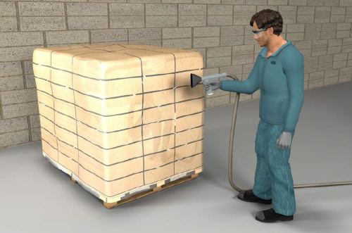
Abb. 36 Schrumpfen mittels Handschrumpfgerät
Schutzmaßnahmen am Einsatzort
Schutzmaßnahmen am Arbeitsgerät
Zusätzliche Schutzmaßnahmen bei Schrumpfsäulen und Schrumpfrahmen
Schutzmaßnahmen für Beschäftigte
5.2.6 Verbrauchsanlagen mit Zerstäubungsbrennern
Zerstäubungsbrenner im Sinne dieser DGUV Regel sind Brenner, die mit Gas aus der flüssigen Phase betrieben werden. Das Gas verlässt die Brenndüse im flüssigen Zustand.
Folgende Anforderungen sind zu beachten:
5.2.7 Flurförderzeuge und andere mobile Arbeitsmittel mit Flüssiggas-Verbrennungsmotor
Treibgasanlagen sind Anlagen, in denen Flüssiggas als Kraftstoff für Verbrennungsmotoren von Fahrzeugen verwendet wird.
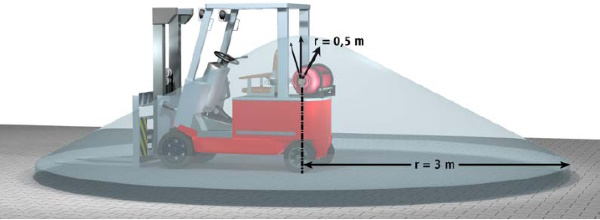
Abb. 37 Gefahrenbereich um die Treibgasflasche am abgestellten Flurförderzeug unter Beachtung der unter Abs. 17 genannten Voraussetzungen
5.2.8 Flüssiggasanlagen zu Brennzwecken in oder an Fahrzeugen
Flüssiggasanlagen zu Brennzwecken in oder an Fahrzeugen sowie Anhängerfahrzeugen sind z. B. Anlagen zum Kochen, Grillen, Frittieren, Heizen, Beleuchten, Kühlen und für Feldkochherde. Der Betrieb dieser Anlagen ist nur bei ausreichender Luftzufuhr und sicherer Abgasabführung erlaubt, z. B. mit geöffneten Verkaufsklappen, Fenstern, Zwangsbelüftungen oder Dachluken.
Unter Fahrzeugen sind auch Fahrzeugaufbauten zu verstehen, die nur gelegentlich verfahren werden. Baucontainer zählen nicht zu den Fahrzeugen.
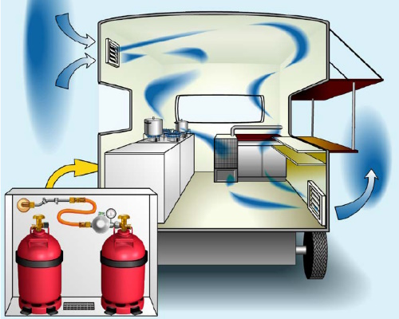
Abb. 38 Flüssiggasanlage zu Brennzwecken im Fahrzeug
5.2.9 Aufstellung von ortsfesten Verbrauchsanlagen in Räumen unter Erdgleiche
Zum Betrieb von unter Erdgleiche aufgestellten Verbrauchseinrichtungen hat die Unternehmerin oder der Unternehmer dafür zu sorgen, dass die über Erdgleiche aufgestellten Druckgasbehälter unter Beachtung der Gefahrenbereiche so aufgestellt werden, dass ausströmendes Gas nicht in Räume unter Erdgleiche gelangen kann.
Diese Forderung ist in der Regel erfüllt, wenn Druckgasbehälter unter Berücksichtigung der in 5.1.1 Gefahrenbereiche und Zonen festgelegten geometrischen Abmessungen aufgestellt sind.
Muss die Aufstellung der Druckgasbehälter an besonderen Stellen erfolgen, z. B. abfallend zu Gebäudeöffnungen, oder befinden sich Öffnungen, z. B. für Luftansaugeinrichtungen, in der Nähe von Gefahrenbereichen und Zonen, können Kombinationen von mehreren Schutzmaßnahmen erforderlich sein. Diese sind z. B. Hochführen der Luftzuführkanäle oder gasdichte Schutzmauern in Verbindung mit einer Vergrößerung des "explosionsgefährdeten Bereiches", in dem Schutzmaßnahmen gemäß 5.1.1 Gefahrenbereiche und Zonen gelten. Ortsfeste Druckgasbehälter sind nach den Festlegungen der TRBS 3146/TRGS 746 "Ortsfeste Druckanlagen für Gase" aufzustellen.
Zur Aufstellung von Flüssiggasanlagen in Räumen unter Erdgleiche siehe auch 5.1.3 Aufstellung von Flüssiggasanlagen.
Außerdem ist dafür zu sorgen, dass Verbrauchseinrichtungen unter Erdgleiche nur aufgestellt werden, wenn durch besondere Schutzmaßnahmen sichergestellt ist, dass unverbranntes Gas nicht ausströmen kann.
Die Forderung nach Durchführung besonderer Maßnahmen ist in der Regel erfüllt, wenn
Die Forderung nach besonderen Bedingungen und Maßnahmen bei der Aufstellung von Verbrauchseinrichtungen in Aufenthaltsräumen unter Erdgleiche ist erfüllt, wenn
Die Wirksamkeit einer technischen Lüftung kann z. B. durch Strömungsüberwachung festgestellt werden.
Eine nachteilige Beeinflussung der Abgasführung kann durch eine Sauglüftung hervorgerufen werden. Gegebenenfalls ist eine Beratung durch Lüftungsexperten oder -expertinnen erforderlich.